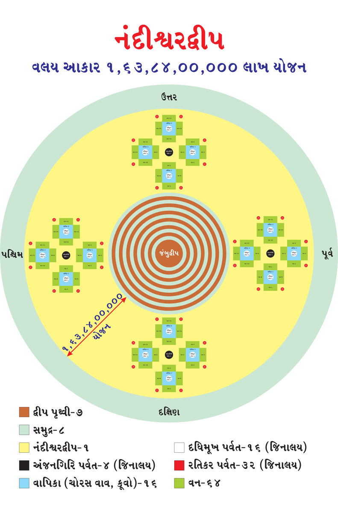
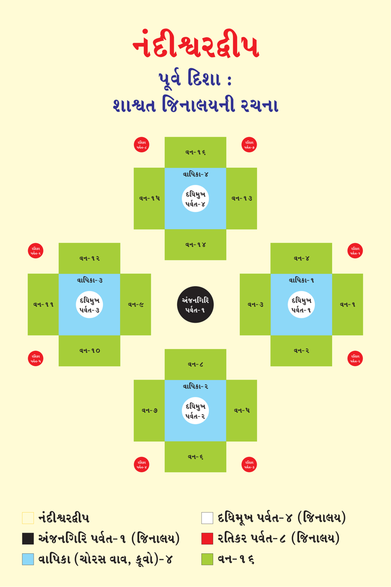
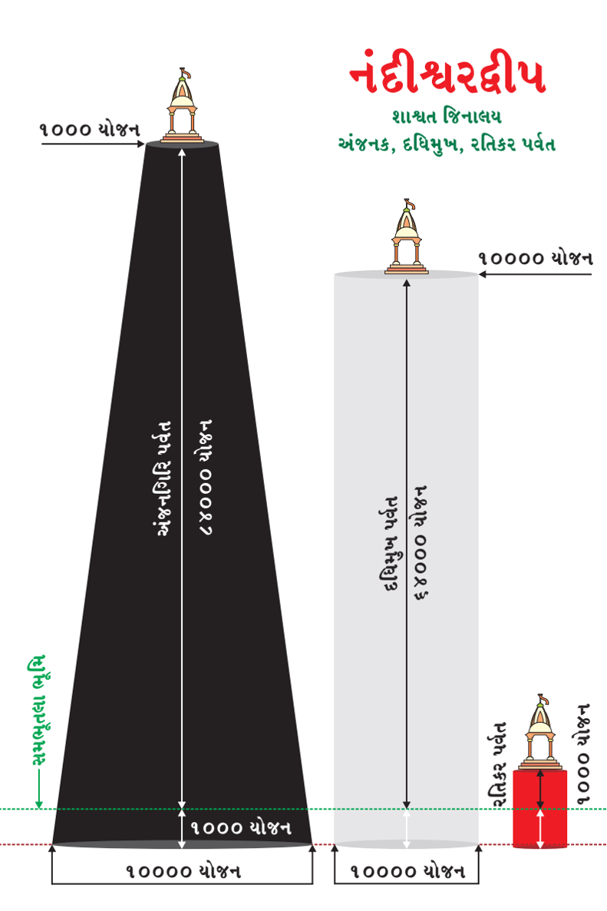
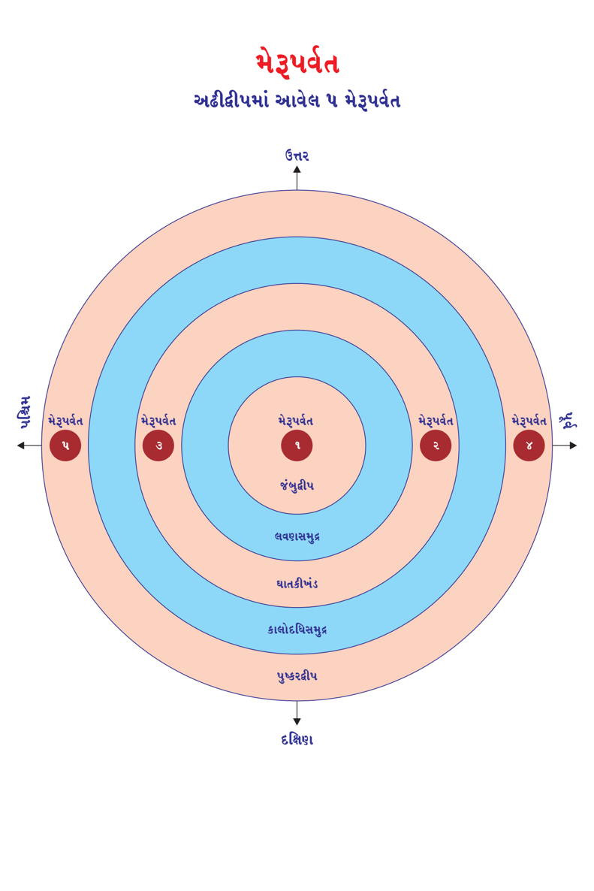

This book Unicode and EPUB Converted by Parth Shah (myself) free of charge as Gyaanseva. You can contact on caparthdshah@gmail.com for further details. You may quote reference "Jain Website"
સૌધર્મેન્દ્રની જેમ ઇશાનેન્દ્ર (બીજા વૈમાનિક દેવલોકના ઇન્દ્ર) પોતાના પાંચ રુપ કર્યા. તેમાના એક રુપે પ્રભુને ખોળામાં ગ્રહણ કર્યા. બીજા રુપે પ્રભુ ઉપર છત્ર ધારણ કર્યું. ત્રીજા અને ચોથા રુપે પ્રભુ ઉપર ચામર ઢાળે છે. પાંચમાં રુપે હાથમાં ત્રિશૂળ રાખી પ્રભુની આગળ ઊભા રહ્યા.
સૌધર્મેન્દ્ર બાળ પ્રભુની ચારે દિશામાં 4 સ્ફટિક રત્નના ઊંચા વૃષભ (બળદ) બનાવે છે. તેમના 8 શિંગડામાંથી પાણીની ધારાઓ બાળ પ્રભુના મસ્તકે વહેવા લાગે છે. સૌધર્મેન્દ્રે પ્રભુનો સ્નાત્ર અભિષેક કરાવે છે. સ્નાત્ર બાદ સૌધર્મેન્દ્રે દેવદૂષ્ય વસ્ત્રથી પ્રભુના શરીરને લૂંછે છે. પ્રભુ સમક્ષ રત્નમય પાટલા ઉપર નિર્મળ અને રૂપા (ચાંદી)ના અક્ષતના અષ્ટમંગલ આલેખે છે. બાળ પ્રભુને ઉત્તમ દ્રવ્યોથી વિલેપન કરી ઉજ્જ્વળ દિવ્ય વસ્ત્રથી પૂજા કરે છે. બાળ પ્રભુના મસ્તકે ત્રણલોકના નાથ રુપે માણિક્ય રત્નનો સુંદર મુગટ સ્થાપન કરે છે.
બે સુવર્ણ કુંડલો બાળ પ્રભુના કાનમાં પહેરાવે છે. ગળે મોતીની માળા, સુવર્ણના કંકણ જેવા બે બાજુબંધ પહેરાવે છે. ગોળાકાર મોટા મોતીઓના મણિમય કંકણો પ્રભુના કાંડે પહેરાવે છે. સુવર્ણનું કટીસૂત્ર (કંદોરો) કમર (નિતંબની ઉપર) ભાગે બાંધે છે. માણિક્યના તોડા બાળ પ્રભુના ચરણે પહેરાવે છે. પારિજાતના પુષ્પોની માળા વડે પ્રભુની પૂજા કરે છે. પ્રભુ સમક્ષ આરતી ગ્રહણ કરી ત્રણ વાર આરતી ઉતારે છે. 250 વિશેષણોયુક્ત વર્ધમાન શક્રસ્તવના બાળ પ્રભુને સ્તવના- વંદનારૂપ કરે છે.
56
Page 171
જૈનમ્ જયતિ શાસનમ્
વર્ધમાન શક્રસ્તવના બાદ સૌધર્મેન્દ્ર મહારાજ ફરીથી અગાઉની જેમ પોતાના પાંચ રુપ ધારણ કરે છે. ઇશાનેન્દ્ર મહારાજાના ખોળામાંથી પોતાના હૃદયભાગે ભગવાનને સ્વીકારે છે. બાકીના ચાર રૂપ અગાઉના કાર્યોની જેમ કાર્ય કરે છે. મેરુશિખરેથી જિનમાતા સમક્ષ ઉપસ્થિત થાય છે.
માતાના પડખે રાખેલ બાળ પ્રભુનું બીજું રુપને ઉપસંહાર કરે છે. તે જ સ્થાને બાળ પ્રભુને સ્થાપન કરે છે. સૌધર્મેન્દ્ર જિનમાતાની અવસ્વાપિની નિદ્રા દૂર કરે છે. ઉજ્જવળ, દિવ્ય અને રેશમી વસ્ત્રયુગલ પ્રભુના ઓશીકે મૂકે છે.
બાળપણથી ઉત્પન્ન થયેલ ભામંડલના પ્રતિત કરાવતું રત્નમય કુંડલ પ્રભુના ઓશીકે મૂકે છે. સોનાના દ્રવ્યોથી બનાવેલ રત્નોના હાર, અડધા હારો યુક્ત ચમકતો શ્રીદામગંડ (ગેડીદડો) ચંદરવા સાથે લટકાવે છે.
સૌધર્મેન્દ્ર, કુબેરને આજ્ઞા કરે છે કે- ‘32 કરોડ હિરણ્ય, 32 કરોડ સોનું, 32 નંદાસન, મનોહર વસ્ત્રો, સાંસારિક સુખને ઉત્પન્ન કરનારી મહામૂલ્યવાન વસ્તુઓ બાળ પ્રભુના ભવનમાં વસાવો.’ સૌધર્મેન્દ્ર, આભિયોગિક દેવતાઓને આદેશ આપે છે કે, ‘તમે ચાર નિકાયના દેવોમાં ઉદ્ઘોષણા કરો કે, જે બાળ પ્રભુ અને જિન માતાનું અશુભ વિચારશે તેમનું મસ્તકના સાત ટૂકડા થશે!’ સૌધર્મેન્દ્ર પ્રભુના જમણા અંગૂઠે અમૃતનો સંચાર કરે છે. (પ્રભુ ક્યારેય સ્તનપાન, માતાનું ધાવણ ધાવતા નથી) જ્યારે પ્રભુને ભૂખ લાગે ત્યારે અંગૂઠો ચૂસે છે. પરંતું, ઇન્દ્ર મહારાજા પ્રભુના સર્વ પ્રકારના ધાત્રીકર્મ કરવા પાંચ અપ્સરા દેવીને ધાવ માતા થઇને રહેવાની આજ્ઞા કરે છે.
57
Page 172
જૈન વિજ્ઞાન
મેરૂશિખરે બાળ પ્રભુના સ્નાત્ર અભિષેક બાદ ઘણાં દેવતાઓ મેરૂશિખરથી સીધા નંદીશ્વર દ્વીપે જાય છે. જેઓ સૌધર્મેન્દ્ર સાથે પધાર્યા હતા તેઓ બાળ પ્રભુ, માતાને સોંપ્યા બાદ નંદીશ્વર દ્વીપે આવે છે.
નંદીશ્વર દ્વીપે પૂર્વ દિશામાં રહેલા 84 હજાર યોજન ઊંચા દેવરમણ અંજનગિરિ ઉપર ઉતરે છે. ત્યાં મણિપીઠિકા યુક્ત ચૈત્યવૃક્ષ અને ઇન્દ્રધ્વજ વડે અંકાયેલા ચાર દ્વાર (દરવાજા) વાળા જિનાલયમાં પ્રવેશ કરે છે. 4 શાશ્વત જિન (ઋષભાનન, ચંદ્રાનન, વારિષેણ અને વર્ધમાન) અષ્ટાન્હિકા મહોત્સવ પૂર્વક જિન પ્રતિમાની પૂજા કરે છે.
4 દિક્પાલો અંજનગિરિ પર્વતની ચારે દિશામાં આવેલ સ્ફટિક મણિના
દધિમુખ પર્વતના ઉપર આવેલ જિનાલયોમાં શાશ્વત જિન પ્રતિમાની પૂજા કરે છે.
ઇશાનેન્દ્ર, નંદીદ્વીપના ઉત્તર દિશામાં આવેલ રમણીય અંજનગિરિ પર્વત ઉપર સૌધર્મેન્દ્રની જેમ શાશ્વત જિન પ્રતિમાની અષ્ટાન્હિકા મહોત્સવ પૂર્વક પૂજા કરે છે. 4 દિક્પાલો અંજનગિરિ પર્વતની ચારેય દિશામાં આવેલ દધિમુખ પર્વત ઉપર આવેલ જિનાલયમાં શાશ્વત જિન પ્રતિમાની પૂજા કરે છે.
ચમરેન્દ્ર, નંદીદ્વીપના દક્ષિણ દિશામાં આવેલ નિત્યોદ્યોત અંજનગિરિ પર્વત ઉપર આવેલ જિનાલયમાં શાશ્વત જિન પ્રતિમાની અષ્ટાન્હિકા મહોત્સવ પૂર્વક પૂજા કરે છે. 4 દિક્પાલો અંજનગિરિ પર્વતની ચારેય દિશામાં આવેલ દધિમુખ પર્વત ઉપર આવેલ જિનાલયમાં શાશ્વત જિન પ્રતિમાની પૂજા કરે છે.
58
Page 173
જૈનમ્ જયતિ શાસનમ્
બલી ઇન્દ્ર, નંદીશ્વર દ્વીપના પશ્ચિમ દિશામાં આવેલ સ્વયંપ્રભ અંજનગિરિ પર્વત ઉપર આવેલ જિનાલયમાં શાશ્વત જિન પ્રતિમાની અષ્ટાન્હિકા મહોત્સવ પૂર્વક પૂજા કરે છે. 4 દિક્પાલો અંજનગિરિ પર્વતની ચારેય દિશામાં આવેલ દધિમુખ પર્વત ઉપર આવેલ જિનાલયમાં શાશ્વત જિન પ્રતિમાની પૂજા કરે છે. સર્વે દેવો અષ્ટાન્હિકા મહોત્સવમાં અઠ્ઠાઇ ફરજિયાત કરે છે. જેમ તેઓ દેવલોકથી નંદીશ્વર દ્વીપે અગાઉ પધાર્યા હતા તે જ પ્રમાણે ફરી દેવલોકે પોતાના સ્થાને હર્ષિત અને આનંદવિભોર સાથે પરત આવે છે.
વર્તમાનમાં સ્નાત્ર મહોત્સવ કે વર્ધમાન શક્રસ્તવ વગેરે વિવિધ અભિષેક અનુષ્ઠાનો થાય છે તેમાં સૌધર્મેન્દ્ર દ્વારા થયેલ સ્નાત્ર વિધાનનું જ આલંબન લેવાય છે. પ્રભુને વિધિસર સ્નાત્ર ભક્તિ કરવાનું જ્ઞાન આપણને ઇન્દ્ર મહારાજ પાસેથી પ્રાપ્ત થયું છે.
સ્નાત્ર મહોત્સવમાં પ્રભુના જન્મ કલ્યાણકના સર્વે વિધાનો નાટ્ય, સ્તુતિ- સ્તવના દ્વારા ભક્તિ વંદના થાય છે. તેમાં સર્વવૃતાંત આ જ પ્રમાણે કવિતા સ્વરુપે ગવાય છે. પ્રભુને સ્નાત્રપૂજા કરીએ ત્યારે ઉચ્ચમાં ઉચ્ચ દ્રવ્યો (પ્રક્ષાલ (ક્ષીરસમુદ્ર - ગાયનું દૂધ), ચંદન, કેસર, વિલેપન દ્રવ્ય, અક્ષત, રક્ષાપોટલી, સુગંધીત પુષ્પ, ફૂલોની માળા, ફળો, નૈવેદ્ય, ધૂપ અગરબત્તી, આરતી વગેરે હોય છે. આપણી પ્રભુ ભક્તિ અને ભાવ ઇન્દ્ર સમાન બને તેવી મનોકામના હોય છે.
59
Page 174
જૈન વિજ્ઞાન
નવ લોકાંતિક દેવતાઓઃ
તીર્થંકર પરમાત્મા, સંસારના ભોગાવલી કર્મોથી વૈરાગ્યની ભાવના ઉત્પન્ન થતાં, સાંસારિક ભોગાવલી કર્મોના ક્ષય થતાં જ, તીર્થંકર પરમાત્મા દ્વારા ધર્મ-તીર્થ પ્રવર્તાવવાના શુભ આશયથી પાંચમા વૈમાનિક (સ્વર્ગમાં વિમાનમાં રહેનારા દેવોને વૈમાનિક કહેવાય) બ્રહ્મ દેવલોકના અંતે રહેનારા નવ લોકાંતિક દેવતાઓ સારસ્વત, આદિત્ય, વહ્નિ, અરુણ, ગર્દતોય, તુષિતાશ્વ, અવ્યાબાધ, મરુત અને રિષ્ટ પ્રભુ સમક્ષ આવી મસ્તકે અંજલિ ધરી, મસ્તક નમાવીને વંદના સહ હે નાથ! ધર્મતીર્થ પ્રવર્તાવોની વિનંતી કરે છે અને યાદ અપાવે છે આપના ઉદ્દેશ્ય અને કાર્યનું સ્મરણ કરો.
વરસીદાનઃ
પ્રભુ સ્વેચ્છાએ કરેલી પ્રાર્થના પ્રમાણે મનુષ્યોને સાંવત્સરિક (વાર્ષિક) દાન આપવાનો પ્રારંભ કરે છે. રાજ સેવકો દ્વારા નગરના ચાર રસ્તાઓ, નગરના ચોકમાં, નગરના દરવાજે ઊંચા સ્વરે ઘોષણા કરાવવામાં આવે છે કે, જે વ્યક્તિને પોતાની જરુરીયાત મુજબ માંગણીઓ સાથે રાજમહેલના દાનશાળામાં આવી દાન સ્વીકારે.
સૌધર્મેન્દ્ર ઇન્દ્ર મહારાજાના આદેશથી કુબેર દેવની પ્રેરણાથી જૃંભક દેવતાઓ ઘણાં સમયથી નધણિયાતું, ભ્રષ્ટ થયેલું, મર્યાદાને ઉલ્લંઘન કરનારું, પર્વતોમાં રહેલું, નિર્જન જગ્યામાં રહેલું ગુપ્તધન સુવર્ણ, ચાંદી અને રત્નો વગેરે મહામૂલ્ય દ્રવ્યો વરસીદાનના ભંડારમાં વરસાવવા લાગ્યા.
60
Page 175
જૈનમ્ જયતિ શાસનમ્
સૂર્યોદયથી બપોરના ભોજનના સમય દરમ્યાન 1,08,00,000 સોનૈયાઓનું દાન આપતાં. આ પ્રમાણે સતત 360 દિવસ સુધી કુલ 3,88,80,00,000 સોનૈયાઓનું દાન આપે છે. પ્રભુ દીક્ષા લેવાના છે જાણી નગરજનો પણ સંસારમાં વૈરાગ્યના ભાવ થવાથી ફક્ત થોડુંક દાન સ્વીકારતા. જો કે પ્રભુ વધારે આપવા ઇચ્છતા હોવા છતાં તેઓ વધુ સ્વીકારતા નથી. આ બધું જ પ્રભુને આવેલા દીક્ષાના ભાવના પરિણામે જ સંભવ બને છે.
વરસીદાનના અંતે સૌધર્મેન્દ્રનું આસન ચલાયમાન થતાં જ અવધિજ્ઞાનથી જાણી ઇન્દ્ર મહારાજ ભગવાન પાસે આવે છે. દેવલોક પરિવાર સામાનિક દેવતાઓ, ઇન્દ્રાણીઓ, લોકપાલ દેવતાઓ, અંદર-મધ્ય અને બહારની સભાના દેવતાઓ, સેનાપતિઓ સાથે નાગરિક દેવતાઓ પણ ઇન્દ્ર મહારાજ સાથે પૃથ્વી લોકે પધારે છે. આ જ પ્રમાણે ભવનપતિ દેવલોકના 20 ઇન્દ્રો, વ્યંતર દેવલોકના 16 ઇન્દ્રો, વાણ વ્યંતર દેવલોકના 16 ઇન્દ્રો, જ્યોતિષ્ક દેવલોકના 2 ઇન્દ્રો અને વૈમાનિક દેવલોકના 10 (1 અ 9)ઇન્દ્રો પૂર્ણ પરિવાર સાથે પ્રભુના દીક્ષા મહોત્સવે પધારે છે.
અચ્યુતેન્દ્ર (12મા વૈમાનિક દેવલોકના ઇન્દ્ર) સાથે બીજા ઇન્દ્રો અને દેવતાઓ પ્રભુના દીક્ષા અભિષેક કરે છે. પૃથ્વીના રાજા-મહારાજાઓ પણ ઇન્દ્રોની જેમ અભિષેક કરે છે. ઇન્દ્ર મહારાજ દેવદૂષ્ય વસ્ત્ર વડે પ્રભુના સ્નાન બાદ અંગ લૂછે છે.
61
Page 176
જૈન વિજ્ઞાન
ઇન્દ્ર મહારાજ પોતાના હાથથી સુગંધી દ્રવ્યો શરીરે લગાડે છે. પ્રભુને શરીરે દેવદૂષ્ય વસ્ત્ર પહેરાવે છે. પ્રભુની શોભા વધારતાં આભૂષણો મુગટ, કુંડળ, હાર, બાજુબંધ, કંકણ જેવા મૂલ્યવાન અલંકારો પહેરાવે છે. પ્રભુને સુગંધીત પુષ્પોની માળા ગળે પહેરાવે છે. કપાળે તિલક કરે છે.
દેવીઓ, સ્ત્રીઓ મધુર સ્વરે માંગલિક ગીતો ગાય છે. ચારણ કન્યાની જેમ દેવેન્દ્રો અને નરેન્દ્રો સ્તુતિઓ કરે છે. વ્યંતર દેવતાઓ સુવર્ણના ધૂપેડા દ્વારા ધૂપ ધરે છે. દેવતાઓ પ્રભુના મસ્તકે સફેદ છત્ર ધરે છે. પ્રભુના બન્ને તરફ સુંદર ચામર ધરે છે.
હજારો પુરુષો દ્વારા ઉપાડી શકાય તેવી શિબિકા (પાલખી) ઉપર પ્રભુ બિરાજમાન થાય છે. શિબિકા સહુ પ્રથમ મનુષ્યો જ ઉપાડે છે. પછી વિદ્યાધરો અને ત્યારબાદ દેવતાઓ શિબિકા ઉપાડે છે.
શિબિકા ઉપર બિરાજમાન પ્રભુના પાછળ એક ચામર સૌધર્મેન્દ્ર અને બીજો ચામર ઇશાનેન્દ્ર વીંઝે છે. દીક્ષા ગ્રહણ કરવા માટે પ્રભુની શિબિકા નગરના માર્ગના મધ્યે ચાલે છે. શંખ વગાડનાર શંખિઓ, ચક્ર ફેરવનારા ચક્રીઓ, સોનાના હળને ગળામાં લટકાવનાર લાંગુલિકો, મંગલમય શુભ બોલનારા માંગલિકો, સ્તુતિ ગાનાર ભાટ ચારણો, પોતાના ખભે બેસાડનારા વર્ધમાનકો, કથાકારો, વાંસ ઉપર ચડી ખેલ દેખાડનારા લંખો, ચિત્રપટ બતાવી આજીવિકા ચલાવનારા મંખો.
62
Page 177
જૈનમ્ જયતિ શાસનમ્
ઘંટ વગાડનારા ઘંટિક પુરુષો, ઇષ્ટ, કાંત, પ્રિય, મનને ગમનાર મનોજ્ઞ, નયનરમ્ય, ઉદાર, કલ્યાણકારી, ઉપદ્રવ વગરના, પવિત્ર, મંગલકારી, હૃદયને પ્રફુલ્લિત કરનારી, કાન અને મનને શાંતિ દેનારી, પુનરાવર્તન દોષ રહિત, સેંકડો અર્થવાળી વાણી વડે નિરંતર અભિનંદન કરતાં, સ્તુતિ અને પ્રશંસા કરતાં હે નંદા! આનંદદાતા! આપનો જય થાઓ. હે ભદ્રા! હે કલ્યાણકાર! આપનો જય થાઓ. આપ ધર્મના પ્રભાવથી પરીષહો અને ઉપસર્ગ સમયે નિર્ભય રહો, સિંહ વગેરે હિંસક જંગલી જાનવરોથી આવતા ઉપદ્રવો ક્ષમાપૂર્વક સહન કરો. આપની ચારિત્ર ધર્મની આરાધના નિર્વિઘ્ન રહો. આ પ્રમાણે બોલતાં વારંવાર પ્રભુનો સત્કાર અને સ્તુતિ પ્રશંસા કરે છે.
પ્રભુ, ઉપસ્થિત નગરજનોને વારંવાર નિહાળતા રહે છે. પ્રભુ દેવતાઓ અને મનુષ્યો સહિત નગરની બહાર ઉપવનમાં પધારે છે. જ્યાં અશોક વૃક્ષ હોય છે ત્યાં આવે છે. અશોક વૃક્ષ નીચે શિબિકા ઊભી રખાવી નીચે ઉતરે છે. સ્વયં અલંકારો ઉતારે છે. સ્વયં પંચમુષ્ટિ લોચ (પાંચ મુઠ્ઠીમાં જ મસ્તક અને દાઢી-મૂછના સમગ્ર વાળને કાઢી નાખે છે.) કરે છે. લોચ થયેલા વાળને સૌધર્મેન્દ્ર પોતાના વસ્ત્રના છેડામાં ગ્રહણ કરે છે. મુંડિત (મુંડન) થઇને સંસારીપણાનો (ગૃહસ્થપણાનો) ત્યાગ કરી અણગાર(શ્રમણ, સાધુ) બને છે.
63
Page 178
જૈન વિજ્ઞાન
તીર્થંકર પરમાત્મા દીક્ષા ગ્રહણ કરે તે સમયે ઇન્દ્ર પ્રભુના ડાબા ખભે વસ્ત્ર સ્થાપિત કરે છે. તેને દેવદૂષ્ય કહેવાય છે. તીર્થંકર પરમાત્મા આ દેવદૂષ્યને પોતાના હાથે દૂર કરતા નથી. પરંતું જો દેવદૂષ્ય સ્વયંમેવ પડી જાય, શરીર પરથી સરી જાય તો ઉપાડીને પાછું શરીર પર સ્થાપિત કરતા નથી.
સૌધર્મેન્દ્ર પંચમુષ્ટિ લોચ કરેલા વાળને સૌધર્મેન્દ્ર ક્ષીરસમુદ્ર (લવણસમુદ્ર, કાલોદધિસમુદ્ર, ઇક્ષુરસસમુદ્રની જેમ ક્ષીરસમુદ્ર આગળ જતાં એના વિષયે સંપૂર્ણ જાણકારી આપીશ.)માં પધરાવે છે.
ॐ नमो सिद्धाणं સમગ્ર ઉપસ્થિત નગરજનો અને દેવી-દેવતાઓની ઉપસ્થિતિમાં સર્વવિરતિ (સર્વ સાવદ્ય (હિંસાજનક) યોગ (પ્રવૃત્તિઓ)ત્યાગના પચ્ચક્ખાણ લે છે. વ્રત અંગીકાર કરતાં જ નરકના સર્વે જીવોને ક્ષણિક શાતા પહોંચે છે. 45 લાખ યોજન વિસ્તારમાં રહેલા સમસ્ત સંજ્ઞી જીવો (મન ધરાવનાર જીવો)ના મનને જાણનારું ચોથું જ્ઞાન મનઃપર્યવજ્ઞાન કાયમસ્વરુપે પ્રગટ થાય છે.
ઇન્દ્ર મહારાજ દેવવૃંદો સાથે પ્રભુને વિધિવત્ સ્તુતિ કરે છે. પ્રભુ દીક્ષા ક્ષેત્રથી વિહાર કરે છે. દેવી-દેવતાઓ જન્મ કલ્યાણક ની જેમ નંદીશ્વર દ્વીપે અષ્ટાન્હિકા મહોત્સવ અઠ્ઠાઇ તપ સાથે સંપન્ન કરી સ્વસ્થાને પ્રસ્થાન કરે છે. દીક્ષા બાદ તીર્થંકર પરમાત્મા નિગોદથી શરુ કરી સંસાર પરિભ્રમણા કરતાં અંતિમ ભવમાં રહેલા સમસ્ત કર્મોને સંપૂર્ણ ક્ષય કરવા સાથે મોક્ષની પ્રાપ્તિ હેતુએ, કેવળજ્ઞાનની પ્રાપ્તિ માટે સતત પ્રયત્નશીલ રહે છે.
64
Page 179
જૈનમ્ જયતિ શાસનમ્
કેવળજ્ઞાન પ્રગટ થાય ત્યારે પ્રભુને 14 રાજલોક (ત્રણ લોક : અધોલોક, તિર્છાલોક અને ઉર્ધ્વલોક) અને અલોક, સમગ્ર જીવાયોની, સમગ્ર અજીવ પદાર્થો, સમસ્ત ક્ષેત્રો, સમસ્ત કાળ (ભૂતકાળ, વર્તમાનકાળ અને ભવિષ્યકાળ), સમગ્ર જીવોના ભૂતકાળ, વર્તમાનકાળ અને ભવિષ્યકાળમાં ગતિ અને આગતિ, મનોભાવ અને મુક્તિ જાણી શકે. 14 રાજલોકમાં રહેલા જીવ-અજીવનું સંપૂર્ણ વિજ્ઞાન શરુથી અંત સુધી જાણી શકે. સિદ્ધશીલામાં ગયેલા સમસ્ત સિદ્ધાત્માને જાણી શકે. સમસ્ત ગણિત, તત્વો અને સિદ્ધાંતને સંપૂર્ણપણે જાણી શકે. તેવું મહાનજ્ઞાન કેવળજ્ઞાન હોય છે.
કેવળજ્ઞાન પ્રગટ થાય ત્યારે અરિહંત પરમાત્માની વાણી સત્ય અને વીતરાગી હોય છે. જે પ્રભુ કહે છે, તે જ સત્ય હોય છે. તેમની વાણીની વિરાધના કે અર્થઘટન ખોટું કરે તો તે વ્યક્તિ, વક્તા, શ્રોતા, જ્ઞાતાનું જ્ઞાનથી પતન થાય, ભાવ અને ભવ ક્રમ પતન, અધોપતન (ઉપરથી નીચે પડે) અને સંસાર પરિભ્રમણ વધી જાય. એટલે પ્રભુની વાણીમાં ક્યારેય કોઇ જ શંકાને સ્થાન નથી. તેમની વાણી એ જ સમ્યકજ્ઞાન છે અને આદેય છે.
કેવળજ્ઞાન પ્રગટ થાય ત્યારે સર્વે કેવળજ્ઞાની મહાત્માઓ પ્રાયઃ મૌન જ રહે છે. એકમાત્ર તીર્થંકર નામકર્મ ઉદયવાળા તીર્થંકર પરમાત્મા જ સમગ્ર પંચેન્દ્રિય સંજ્ઞી જીવો (તિર્યંચ, મનુષ્ય અને દેવી-દેવતાઓ)ને સંપૂર્ણ સમ્યકજ્ઞાન આપે છે.
65
Page 180
જૈન વિજ્ઞાન
યોગ્ય સમયે, યોગ્ય નક્ષત્રે પ્રભુને કેવળજ્ઞાન પ્રગટ થાય ત્યારે સર્વ દિશાઓ પ્રસન્ન થાય છે. વાયુ (પવન) સુખકારી વહેવા લાગે છે. નારકીના જીવોને ક્ષણિક સુખની પ્રાપ્તિ થાય છે. 64 ઇન્દ્રોના આસન (સિંહાસન) કંપાયમાન થાય છે. સર્વે દેવતાઓ એકઠા થવાની પ્રવૃત્તિઓ જન્મ કલ્યાણકની જેમ જ જાણવી.
સૌધર્મેન્દ્ર પાલક વિમાનની જેમ ઐરાવણ ગજેંદ્ર-હાથી (વૈમાનિક દેવલોકમાં તિર્યંચ પંચેન્દ્રિય જીવોનો જન્મ થતો જ નથી. એટલે વૃષભ, ઘોડા, હાથી વગેરે તિર્યંચ જીવો, દેવો વૈક્રિયલબ્ધિથી ઇન્દ્ર મહારાજની સેવાના ભાવથી તેવું સ્વરુપ ધારણ કરે છે. સૌધર્મેન્દ્ર દેવનું વાહન ઐરાવણ ગજેંદ્ર જે ઐરાવણ દેવનું વૈક્રિયલબ્ધિથી વિકુર્વેલું (બનેલું) હાથીનું સ્વરુપ છે.) ઉપર બિરાજમાન થાય છે.
સમવસરણની રચનાઃ
વાયુકુમાર દેવતાએ સમવસરણ માટે 1 યોજન વિસ્તાર ભૂમિનું સફાઇ કરે છે. મેઘકુમાર દેવતાઓ સુગંધી જળને વરસાવે છે. જેથી ભૂમિમાંથી સુંદર સુગંધ આવવા લાગે છે. વ્યંતર દેવતાઓ ભક્તિથી સુવર્ણ, માણિક્ય રત્ન અને રત્નોના પથ્થરથી ઊંચુ સમવસરણના ભૂમિનું તળીયું બનાવે છે તેમજ પંચવર્ણના સુગંધી પુષ્પો વેરાવે છે. ચારે દિશામાં રત્ન, માણિક્ય અને સુવર્ણના તોરણો બાંધે છે. રત્ન વગેરેની પૂતળીઓ સજાવે છે. સફેદ છત્રો, ધ્વજાઓથી શોભાવે છે. તોરણોની નીચે સ્વસ્તિક વગેરે અષ્ટમંગલના શ્રેષ્ઠ ચિત્રો કરે છે.
66
Page 181
જૈનમ્ જયતિ શાસનમ્
સમવસરણનો ઉપરનો પ્રથમ ગઢ ઉર્ધ્વલોકના વૈમાનિક દેવતાઓ રત્નોનો બનાવે છે. તે ગઢ ઉપર જાતજાતના મણિમય કાંગરાઓ (કિલ્લા જેવું) બનાવે છે. બીજો ગઢ (મધ્યમાં) જ્યોતિષ્ક દેવલોકના દેવતાઓ દ્વારા સુવર્ણનો બનાવવામાં આવે છે. તે ગઢ ઉપર રત્નોના કાંગરાઓ બનાવે છે. ભવનપતિ દેવલોકના દેવતાઓ દ્વારા રજત (ચાંદી)નો નીચલો (ત્રીજો) ગઢ બનાવે છે. તેના ઉપર સુવર્ણના કાંગરાઓ બનાવે છે. માણિક્ય રત્નોના તોરણોથી સમવસરણ શોભાયમાન બને છે.
ત્રણેય ગઢને (રજત (નીચે), સુવર્ણ (મધ્ય) અને રત્ન (ઉપર) ચારે દિશાએ દ્વાર (પ્રવેશ દ્વાર) હોય છે. દરેક દ્વારે વ્યંતર દેવલોકના દેવતાઓ દ્વારા ધૂપેડામાંથી સતત ધૂપની સુગંધ પ્રસરે છે. સમવસરણને દરેક દ્વારે ગઢની જેમ ચાર-ચાર રસ્તા (દ્વાર) વાળી અને સુવર્ણના કમળયુક્ત વાપિકાઓ (ચોરસ કૂવો) કરે છે. બીજા ગઢમાં ઇશાનખૂણામાં પ્રભુને વિશ્રામ કરવા માટે એક દેવછંદ ની રચના કરે છે.
ઉપરના પ્રથમ ગઢના પૂર્વ દ્વારે બન્ને તરફ વૈમાનિક દેવલોકના સુવર્ણ વર્ણવાળા 2-દ્વારપાલ (ચોકીદાર) બને છે. દક્ષિણ દ્વારમાં ઉજ્જવળ વર્ણવાળા વ્યંતર દેવલોકના 2-દ્વારપાલ બને છે. પશ્ચિમ દ્વારમાં રક્તવર્ણ વાળા જ્યોતિષ્ક દેવલોકના 2-દ્વારપાલ હોય છે. ઉત્તર દિશાના દ્વારે ભવનપતિ દેવલોકના 2-દ્વારપાલ બને છે.
67
Page 182
જૈન વિજ્ઞાન
મધ્ય (બીજા) ગઢમાં ચારેય દ્વારે બન્ને તરફ અનુક્રમે અભય, પાશ, અંકુશ અને મુદ્ ગરને ધારણ કરનારી શ્વેતમણી, શોણમણી, સ્વર્ણમણી અને નીલમણી જેવી કાંતિવાળી ચારેય નિકાયની જયા, વિજયા, અજિતા અને અપરાજિતા નામની 2-2 દેવીઓ પ્રતિહાર બનીને ઊભી હોય છે.
નીચે (ત્રીજા) ગઢના ચારે દ્વારે તુંબરુ, ખટ્વાંગધારી, મનુષ્યમસ્તક માળાધારી અને જટામુગટમંડિત નામના ચાર દ્વારપાલ હોય છે. સમવસરણની મધ્યમાં વ્યંતરલોકના દેવતાઓ દ્વારા પ્રભુના દેહ પ્રમાણથી 12 ગુણા ઊંચુ ચૈત્યવૃક્ષ (અશોકવૃક્ષ)ની રચના કરે છે. ચૈત્યવૃક્ષની નીચે વિવિધ રત્નોની એક પીઠની રચના કરે છે. પીઠ ઉપર અપ્રતિમ મણિમય એક છંદકની રચના કરે છે. છંદકની મધ્યમાં પૂર્વ દિશા તરફ પાદપીઠ સહિત રત્નસિંહાસનની રચના કરે છે. સિંહાસન ઉપર ત્રણલોકના નાથ સ્વરુપના ત્રણ ચિન્હોયુક્ત ત્રણ છત્રની રચના કરે છે.
સિંહાસનની બન્ને બાજુએ વ્યંતર દેવલોકના 2-યક્ષો ચામર લઇ ઊભા રહે છે. સમવસરણના ચારે દ્વારની ઉપર અદભૂત કાંતિયુક્ત ધર્મચક્ર સુવર્ણના કમળમાં રાખે છે. ચારે પ્રકારના દેવતાઓ (વૈમાનિક, જ્યોતિષ્ક, વ્યંતર (વ્યંતર અને વાણવ્યંતરનો સમાવેશ વ્યંતર દેવલોકમાં થાય છે) અને ભવનપતિ) કરોડો દેવતાઓથી ઘેરાયેલા પ્રભુ સમવસરણમાં દેશના (ઉપદેશ, પ્રવચન) દેવા પધારે છે ત્યારે દેવતાઓ હજાર પાંખડીઓ વાળા સુવર્ણના સહસ્ત્રપત્ર કમળના નવ કમળો પ્રભુની આગળ મૂકે છે. (કેવળજ્ઞાનની પ્રાપ્તિ પછી પ્રભુ જ્યારે ચાલે ત્યારે પ્રભુના પગ જમીન ઉપર ક્યારેય નથી પડતાં, દેવો પ્રભુના એકેક પગલે સુવર્ણ કમળ એક પછી એક આગળ મૂકે છે.
68
Page 183
જૈનમ્ જયતિ શાસનમ્
પરમાત્મા સમવસરણના પૂર્વ દ્વારથી પ્રવેશ કરી ચૈત્યવૃક્ષની ત્રણ પ્રદક્ષિણા દે છે. પછી તીર્થને નમસ્કાર કરે છે ‘णमो तित्थस्स’ એટલે તીર્થને નમસ્કાર હોજો. (દીક્ષા પ્રાપ્તિથી કેવળજ્ઞાનની પ્રાપ્તિ પૂર્વે તેઓ છદ્મસ્થ હોય છે. રાગ-દ્વેષ ઉપર વિજય પ્રાપ્ત થતાં તેઓ વીતરાગી બને છે. ચારઘાતી કર્મો ઉપર વિજય મેળવતાં તેઓ અરિહંત કહેવાય છે. તીર્થની સ્થાપના થતાં હવે પછીથી તેઓ તીર્થંકર કહેવાય છે.) પછી પૂર્વાભિમુખ (તીર્થંકર પરમાત્માનું મુખ પૂર્વ દિશા તરફ હોય) સિહાંસન ઉપર પ્રભુ સ્થાન ગ્રહણ કરે છે.
વ્યંતર દેવલોકના દેવો બીજી ત્રણ દિશા (દક્ષિણ, પશ્ચિમ અને ઉત્તર) ઉપર ભગવાનના ત્રણ પ્રતિબિંબ (પ્રભુ પોતે એક છે પરંતું તેમનું જ સ્વરૂપ દેવો દ્વારા નિર્માણ થાય છે, જો કે દેવતાઓ પ્રભુના અંગૂઠા જેવું રૂપ કરવા માટે પણ સમર્થ જ નથી પરંતું, પ્રભુના પ્રભાવથી જ તેવું સ્વરૂપ બને છે.) બનાવે છે. ચારેય દિશાએ પ્રભુના દરેક મસ્તકના ફરતે શરીરની કાંતિયુક્ત ભામંડલ પ્રગટ થાય છે. જેની આગળ સૂર્યનું તેજ પણ ઝાંખું પડે છે. પ્રતિશબ્દોથી ચારે દિશાને શબ્દાયમાન કરતી ગંભીર સ્વરવાળી દુંદુભિ આકાશમાં વાગે છે. પ્રભુની નજીક એક રત્નમય ધ્વજ (ચારેય દિશા મળી કુલ 4-ધ્વજ થાય છે.) હોય છે.
69
Page 184
જૈન વિજ્ઞાન
સમવસરણના ઉપરના ગઢમાં વૈમાનિક દેવલોકની દેવીઓ (વૈમાનિક દેવલોકમાં સ્ત્રી દેવીઓનો જન્મ પ્રથમ સૌધર્મ દેવલોક અને બીજા ઇશાન દેવલોકમાં જ થાય છે. બાકી ત્રીજા વૈમાનિક દેવલોકથી બારમાં અચ્યુત દેવલોક, નવ ગ્રૈવયક અને પાંચ અનુત્તર વિમાનમાં જન્મ થતો નથી.) પૂર્વ દ્વારથી પ્રવેશ કરી, ત્રણ પ્રદક્ષિણા દઇ, તીર્થંકર અને તીર્થને નમસ્કાર (વંદના) કરી, સાધુ-સાધ્વી ભગવંતોને યોગ્ય સ્થાન છોડી સમવસરણના અગ્નિખૂણે (પૂર્વ અને દક્ષિણની વચ્ચે) ઊભી રહે છે.
અધોલોકના દેવલોકથી ભવનપતિ, વ્યંતર અને વાણવ્યંતર તેમજ તિરછાલોકના જ્યોતિષ્ક દેવલોકની દેવીઓ સમવસરણના દક્ષિણ દ્વારેથી પ્રવેશ કરી ત્રણ પ્રદક્ષિણા દઇ, તીર્થંકર અને તીર્થને નમસ્કાર (વંદના) કરી, સાધુ-સાધ્વી ભગવંતોના યોગ્ય સ્થાન છોડી સમવસરણના નૈઋત્ય ખૂણે (પશ્ચિમ અને દક્ષિણની વચ્ચે) ઊભી રહે છે.
સમવસરણના પશ્ચિમ દ્વારેથી પ્રવેશ કરી ભવનપતિ, વ્યંતર, વાણવ્યંતર અને જ્યોતિષ્ક દેવલોકના દેવતાઓ ત્રણ પ્રદક્ષિણા દઇ, તીર્થંકર અને તીર્થને નમસ્કાર (વંદના) કરી, સાધુ-સાધ્વીને યોગ્ય સ્થાન છોડી સમવસરણના વાયવ્ય (પશ્ચિમ અને ઉત્તર દિશાના વચ્ચે) ખૂણે બેસે છે.
સમવસરણના ઉત્તર દ્વારેથી પ્રવેશ કરી વૈમાનિક દેવલોકના દેવતાઓ, મનુષ્યો (સ્ત્રી-પુરુષ) ત્રણ પ્રદક્ષિણા દઇ, તીર્થંકર અને તીર્થને નમસ્કાર (વંદના) કરી, સાધુ-સાધ્વી ભગવંતોના યોગ્ય સ્થાન છોડી સમવસરણના ઇશાન (ઉત્તર અને પૂર્વ દિશાના વચ્ચે) ખૂણે બેસે છે.
70
Page 185
જૈનમ્ જયતિ શાસનમ્
સમવસરણમાં પ્રવેશતી વખતે ઓછી ઋદ્ધિ અને મોટી ઋદ્ધિવાળા જે કોઇ આવે તે, તે ઋદ્ધિ અને પદ પ્રમાણે નમીને આગળ જાય છે. પ્રભુના સમવસરણમાં કોઇને પણ પ્રતિબંધ નથી હોતું. કોઇ જાતની વિકથા (ખોટી, ખરાબ વાર્તાલાપ) નથી થતી. પરસ્પર વિરોધીઓ પણ ભાઇચારા સાથે બિરાજે છે. કોઇપણ જીવને એકબીજાનો ભય નથી. આ જ તીર્થંકર પરમાત્માનો અતિશય છે.
બીજા (મધ્ય) ગઢમાં તિર્યંચ જીવો આવીને બેસે છે. ત્રીજા (નીચલા) ગઢમાં સર્વે પધારનારના વાહનો રહે છે. સમવસરણમાં તીર્થંકર પરમાત્માની દેશના પૂર્વે સૌધર્મેન્દ્ર અંજલિ (બે હાથની હથેળી, મસ્તકે લગાડી) જોડી, વંદના કરી, વર્ધમાન શક્રસ્તવના (250 વિશેષણોથી યુક્ત) તીર્થંકર પરમાત્માને ઉદ્દેશીને કરે છે. સ્તવના કરી ઇન્દ્ર મહારાજા નર, નારી, દેવ અને દેવીઓથી આગળ બેસે છે. નરેન્દ્રો (ચક્રવર્તી, વાસુદેવ, બળદેવ, રાજા-મહારાજાઓ જો ઉપસ્થિત હોય તો) ઇન્દ્ર મહારાજની પાછળ બેસે છે.
સમવસરણની એવી વિશેષતા હોય છે કે જેટલી પણ વ્યક્તિ સમવસરણમાં પધારે તેટલા લોકો તેમાં સુખરુપ સમાઇ શકે છે. સમવસરણ પોતાની મેળે નાનું- મોટું થઇ શકે છે એ પણ તીર્થંકર પરમાત્માનો અતિશય હોય છે.
71
Page 186
જૈન વિજ્ઞાન
સમવસરણમાં તીર્થંકર પરમાત્મા પ્રથમવાર દેશના (વ્યાખ્યાન, પ્રવચન, ઉપદેશ) આપે છે. તે અર્ધમાગધી ભાષામાં હોય છે. પરંતું ઉપસ્થિત સર્વે દેવો, મનુષ્યો અને તિર્યંચ જીવોને તેમની ભાષામાં જ સંભળાય અને સમજાય છે. આ પણ તીર્થંકર પરમાત્માનો અતિશય હોય છે. નજીક બેસેલા લોકોને પણ સ્પષ્ટ અવાજ સંભળાય તેટલું જ દૂર બેસતાં લોકોને પણ સ્પષ્ટ સંભળાય!
દરેક તીર્થંકર પરમાત્માનો દેશનાનો વિષય અલગ-અલગ હોય છે. પરંતું સમગ્ર જૈન દર્શન (આગમ, 14 પૂર્વો, ભૂમિ, ક્ષેત્ર, કાળ, ભાવ, જીવ-અજીવ, એકેન્દ્રિય થી પંચેન્દ્રિય જીવો, નરક, તિર્યંચ, મનુષ્ય અને દેવ, કર્મો વગેરે દરેક તત્વોને દ્રષ્ટાંતપૂર્વક આવરી લે છે)ના સમસ્ત વિષયો હોય છે. જેથી શ્રોતાજનો એકચિત્ત બની સુખરુપ સાંભળે છે અને શંકારહિત સમજે છે. એ પણ પ્રભુનો અતિશય છે.
આમ પ્રભુની વાણી વીતરાગમય, વૈરાગ્યમય, શ્રોતાજનોના જિજ્ઞાસારુપ, દરેક પ્રશ્નોના સમાધાન યુક્ત, ભૂતકાળ, વર્તમાનકાળ અને ભવિષ્યકાળ સંબંધે દરેક પ્રશ્નોના ઉત્તરો આપે છે. દરેક શ્રોતાજનોને દેશના સાંભળતી વખતે ભૂખ, તરસ વગેરે શારીરિક ક્રિયાની પીડા હોતી નથી.
સમવસરણમાં દેશના સાંભળતાં જ ઉપસ્થિત મનુષ્યોમાંથી કેટલાક મનુષ્યોને વૈરાગ્યના ભાવ જાગે છે. સંસારનો મોહ છૂટી જાય છે. તારક તીર્થંકર પરમાત્મા પાસે ચારિત્ર ધર્મ અંગીકાર કરવાની ભાવના રજૂ કરે છે.
72
Page 187
જૈનમ્ જયતિ શાસનમ્
સમવસરણમાં પ્રભુની વૈરાગ્યમય દેશના સાંભળી મનુષ્ય દીક્ષા લેવા તત્પર થાય છે. પ્રભુ યોગ્યતા જોઇ દીક્ષા આપે છે. સહુ પ્રથમ ગણધર પદની નિયુક્તિ થાય છે. ગણધર નામ કર્મના ઉદય વાળા મહાત્માને ત્રિપદી (ત્રણ પદ : ઉપ્પનેઇવા- વિગમેઇવા-ધુવેઇવા એટલે ઉત્પાદ, વિગમ અને ધ્રૌવ્ય) આપે છે. જેના પરિણામે ગણધર ભગવંત બાર આગમ સહ 14 પૂર્વની રચના કરે છે. એટલું વિશિષ્ટ જ્ઞાન ગણધર ભગવંતને માત્ર ત્રિપદી સાંભળતાં જ થઇ જાય છે.
એ જ સમવસરણમાં સર્વવિરતિ (સર્વે વ્રતો) લેનાર ગણધર ભગવંતો, સાધુ ભગવંતો, સાધ્વી ભગવંતો અને દેશવિરતિ (અમુક વ્રતો) લેનાર શ્રાવકો અને શ્રાવિકાઓ થતાં જ ચતુર્વિધ સંઘનું નિર્માણ થાય છે.
સૌધર્મેન્દ્ર મહારાજ વાસક્ષેપનો થાળ લઇ પ્રભુના ચરણ પાસે ઊભા રહે છે. એટલે પ્રભુ ઊભા થઇ અનુક્રમે તેમની ઉપર વાસક્ષેપનો છંટકાવ કરી સૂત્રથી, અર્થથી, દ્રવ્યથી, ગુણથી, પર્યાયથી અને નયથી તેમને અનુયોગ અનુજ્ઞા આપે તથા ગણની અનુજ્ઞા આપે છે.
ત્યારબાદ દેવતાઓ, મનુષ્યો દુંદુભિના નાદથી ચારે તરફ વાસક્ષેપ કરે છે. સર્વે ગણધરો અંજલિમુદ્રાએ ઊભા રહે છે. પછી તીર્થંકર પરમાત્માની જેમ ગણધર ભગવંત પૂર્વાભિમુખ સિંહાસને બિરાજમાન થઇ તીર્થંકર પરમાત્માએ કહેલી દેશના પુનઃ સમવસરણમાં વિસ્તારપૂર્વક સમજાવે છે.
73
Page 188
જૈન વિજ્ઞાન
સમવસરણમાં દેશના સંપન્ન થતાં જ અખંડ, ફોતરા વગર અને ઉજ્જવળ શાલથી બનાવેલ, ચાર પ્રસ્થ (પ્રાચીન માપ) જેટલો અને થાળમાં રાખેલ બલિ સમવસરણના પૂર્વ દ્વારેથી અંદર લાવવામાં આવે છે. દેવતાઓ તેમાં સુગંધી દ્રવ્યોનો છંટકાવ કરી વધુ સુગંધીત બનાવે છે. મનુષ્યોમાં શ્રેષ્ઠ રાજા (ચક્રવર્તી, વાસુદેવ, બળદેવ, મહારાજા કે નગરનો રાજા જે પણ શ્રેષ્ઠ વ્યક્તિ સમવસરણમાં ઉપસ્થિત હોય) તેને ઉપાડે છે. દુંદુભિના ઘોષથી દરેક દિશાઓ પ્રતિઘોષિત થાય છે. તેમની પાછળ સ્ત્રીઓ મંગલ ગીતો ગાતા ચાલે છે.
પછી, બલિને પ્રભુની પ્રદક્ષિણા કરાવીને આકાશમાં ઉછાળવામાં આવે છે. અડધા બલિને દેવતાઓ જ આકાશમાં ગ્રહણ કરી લે છે. અડધો ભાગ પૃથ્વી ઉપર પડતાં મહારાજા સ્વીકાર કરે છે. બલિનો પ્રભાવ એવો હોય છે કે, શરીરમાં પૂર્વે (અગાઉ, જુના) કોઇ રોગ-મહારોગ થયા હોય તો તે નાશ પામે છે અને નવા કોઇપણ રોગો છ મહીના સુધીમાં થતાં જ નથી. સિંહાસનથી પ્રભુ ઊભા થઇ સમવસરણના ઉત્તર દ્વારથી બહાર નીકળે છે. તેમની સાથે ઇન્દ્ર મહારાજા પણ ચાલે છે.
સમવસરણમાં પ્રથમ દેશના તીર્થંકર પરમાત્મા આપે છે. બીજી દેશના ગણધર ભગવંત આપે છે અને દિવસની અંતિમ દેશના તીર્થંકર પરમાત્મા જ આપે છે. તીર્થંકર પરમાત્માની ઉપસ્થિતિમાં તીર્થના અધિષ્ઠાયક દેવ અને અધિષ્ઠાયિકા દેવીની, દેવો દ્વારા નિયુક્તિ થાય છે. હવે તીર્થ અને જિનશાસનની રક્ષાની જવાબદારી તેમના શિરે હોય છે.
74
Page 189
જૈનમ્ જયતિ શાસનમ્
તીર્થંકર પરમાત્મા પોતાના અંત સમયને જાણે છે. પ્રભુ બાદર કાયયોગમાં રહી, બાદર મનયોગ અને બાદર વચનયોગને રૂંધી (રોકી) લે છે. પછી સૂક્ષ્મ કાયયોગનો આશ્રય લઇ બાદર કાયયોગ, સૂક્ષ્મ મનયોગ અને સૂક્ષ્મ વચનયોગને રોકી લે છે. છેવટે સૂક્ષ્મ કાયયોગનો પણ અસ્ત કરીને સૂક્ષ્મક્રિય શુક્લધ્યાનના ત્રીજા પાયાના અંત પ્રત્યે પ્રાપ્ત થાય છે. તે પછી ઉચ્છિન્નક્રિય શુક્લધ્યાનનો ચોથો પાયો જેના પાંચ હ્રસ્વાક્ષરના ઉચ્ચાર જેટલો જ સમય છે તેનો આશ્રય લે છે. પછી કેવળજ્ઞાન, કેવળદર્શન, સર્વે દુઃખોથી રહિત, આઠ કર્મો (ચાર ઘાતિ કર્મ અને ચાર અઘાતિ કર્મ)નો ક્ષય કરી અનંત વીર્ય, અનંત સુખ અને અનંત ઋદ્ધિવંત પ્રભુ, બંધન રહિત થઇ ઉર્ધ્વગતિએ માત્ર 1 સમયમાં સિદ્ધશીલાએ લોકના અંતે શાશ્વત સુખને પ્રાપ્ત થાય છે.
તેમની સાથે રહેનાર શ્રમણો (સાધુ ભગવંતો) અનશનવ્રત લે છે. ક્ષપકશ્રેણીમાં આવી તેમને પણ કેવળજ્ઞાન પ્રગટ થાય છે. પ્રભુની જેમ મન, વચન અને કાયાને રોકી પરમપદને પ્રાપ્ત થાય છે. પ્રભુના નિર્વાણ કલ્યાણક સમયે નરકના જીવોને ક્ષણિક શાતાની પ્રાપ્તિ થાય છે. ઇન્દ્રોના આસન કંપાયમાન થાય છે. સર્વે દેવલોકથી દેવી-દેવતાઓનું તિરછાલોકમાં (દેવોનું આગમન પ્રભુના જન્મ કલ્યાણકની જેમ વિધિવત અને વિસ્તારપૂર્વક સમજવું) પ્રભુના નિર્વાણ સ્થળે પધારે છે.
75
Page 190
જૈન વિજ્ઞાન
ઇન્દ્ર મહારાજા તત્કાળ પ્રભુના અગ્નિસંસ્કાર માટે દ્રવ્યો લાવવા આભિયોગિક (સેવક) દેવતાને આદેશ આપે છે. દેવતાઓ નંદનવનમાંથી ગોશીર્ષ ચંદનના લાકડાઓ લઇ આવે છે. ગોશીર્ષ ચંદનના લાકડાને પૂર્વ દિશામાં પ્રભુના દેહ માટે ગોળાકાર ચિતા રચે છે. તેમની સાથે અનસન પામેલા મહાત્મા સાધુઓ માટે દક્ષિણ દિશામાં ત્રિકોણાકાર ચિતા રચે છે અને બીજા સાધુઓ માટે પશ્ચિમ દિશામાં ત્રીજી ચોરસ ચિતા રચે છે.
દેવતાઓ પાસેથી ક્ષીરસમુદ્રનું પાણી મંગાવે છે. ક્ષીરસમુદ્રના પાણીથી પ્રભુના શરીરને સ્નાન કરાવે છે. ગોશીર્ષ ચંદનના રસથી વિલેપન કરે છે. સફેદ વર્ણના દેવદૂષ્ય પરમેશ્વરના શરીરને ઢાંકે છે. દિવ્ય માણેકના આભૂષણોથી પરમેશ્વરને વિભૂષિત કરે છે.
ઉપસ્થિત દેવતાઓ ઇન્દ્ર મહારાજની જેમ ઉપરોક્ત ક્રિયા બીજા નિર્વાણ પામેલ મહર્ષિ અને સાધુ ભગવંતોના દેહને કરે છે. દેવતાઓ દ્વારા હજાર પુરુષો દ્વારા ઉપાડી શકાય તેવી ત્રણ શિબિકા (પાલખી) તૈયાર કરવામાં આવે છે.
ઇન્દ્ર મહારાજા પ્રભુના શરીરને મસ્તકે ઉપાડી શિબિકામાં બિરાજમાન કરે છે. તે જ પ્રમાણે બીજા દેવતાઓ મહર્ષિઓ અને સાધુ ભગવંતોના શરીરને શિબિકામાં બિરાજમાન કરાવે છે. ઇન્દ્ર મહારાજા પ્રભુની શિબિકા પોતે જ ઉપાડે છે અને ઉપસ્થિત દેવતાઓ બીજી બે શિબિકાઓ ઇન્દ્ર મહારાજની જેમ ઉપાડે છે.
76
Page 191
જૈનમ્ જયતિ શાસનમ્
દેવો શિબિકા લઇ આગળ વધે છે ત્યારે ઉપસ્થિત દેવીઓ તાલબદ્ધ રાસ અને મધુર સ્વરથી ગાય છે. દેવતાઓ ધૂપેડા લઇ શિબિકાની આગળ ચાલે છે. દેવતાઓ શિબિકા ઉપર સુગંધીત પુષ્પોની વૃષ્ટિ કરતાં રહે છે. દેવદૂષ્ય વસ્ત્રોના તોરણ બનાવતા આગળ વધે છે. દેવતાઓ શોકમગ્ન થાય છે અને કરુણસ્વરે પોકારે છેઃ ’હવે અમને ધર્મનો માર્ગ કોણ અપાવશે? અમારો ધર્મસંશય કોણ દૂર કરશે?’ વાજિંત્રોના નાદ સાથે દેવતાઓ શિબિકાઓને ચિતા પાસે લઇ આવે છે.
પ્રભુના દેહને ઇન્દ્ર મહારાજ પૂર્વ દિશાએ ગોળ ચિતામાં મૂકે છે. મહર્ષિ મહાત્માના દેહને દક્ષિણ દિશાની ચિતામાં મૂકે છે. સાધુ ભગવંતોના દેહને પશ્ચિમ દિશાની ચિતામાં મૂકે છે. અગ્નિકુમાર દેવતાઓએ તે ચિતામાં અગ્નિ પ્રગટ કરે છે. વાયુકુમાર દેવતાઓ વાયુ રચે છે. એટલે ચારે તરફ અગ્નિ પ્રગટવા લાગે છે. દેવતાઓ ચિતામાં કપૂર અને ઘડાઓ ભરીને ઘી નાખવા લાગે છે.
હાડકાઓ સિવાય શરીરના બાકીના તત્વો બળીને ભસ્મ થાય ત્યારે મેઘકુમાર દેવતાઓ ક્ષીરસમુદ્રના જળથી ચિતા અગ્નિને શાંત કરે છે. સૌધર્મેન્દ્ર, દેવલોકમાં પોતાના વિમાનમાં પ્રતિમાની જેમ પૂજા કરવા માટે પ્રભુની ઉપરથી જમણી દાઢ ગ્રહણ (સ્વીકાર) કરે છે. ઇશાનેન્દ્ર (બીજા વૈમાનિક દેવલોકના ઇન્દ્ર) પ્રભુની ઉપરથી ડાબી દાઢનો સ્વીકાર કરે છે.
77
Page 192
જૈન વિજ્ઞાન
વ્યંતર દેવલોકના ઇન્દ્ર ચમરેન્દ્ર મહારાજા નીચેથી જમણી બાજુની દાઢ સ્વીકાર કરે છે. વ્યંતર દેવલોકના ઇન્દ્ર બલીન્દ્ર નીચેથી ડાબી બાજુની દાઢનો સ્વીકાર કરે છે. બીજા ઇન્દ્રોએ પ્રભુના બાકીના દાંતનો સ્વીકાર કરે છે. અન્ય દેવતાઓ પ્રભુના અન્ય હાડકાઓનો સ્વીકાર કરે છે.
પ્રભુની ચિતા સ્થાને રત્નની ત્રણ દેરીઓ (પ્રભુ, મહર્ષિ મહાત્મા અને સાધુ ભગવંત) બનાવે છે. 64-ઇન્દ્ર મહારાજાઓ સહ પરિવાર દેવી-દેવતાઓ સાથે પ્રભુના જન્મ કલ્યાણકની જેમ નંદીશ્વર દ્વીપે અષ્ટાન્હિકા મહોત્સવ અઠ્ઠાઇ તપ સાથે સંપન્ન કરી પોતાને દેવલોકમાં પરત આવે છે.
ઇન્દ્ર મહારાજ પોતાના વિમાન (વૈમાનિક દેવલોક) અને ભવન (ભવનપતિ અને વ્યંતર દેવલોક)માં સુધર્મા સભાની અંદર માણવક સ્તંભ ઉપર વજ્રમય ગોળ ડાબલામાં પ્રભુની દાઢ, દાંતને આરોપણ કરી પ્રતિદિન તેની પૂજા કરે છે. પ્રભુની દાઢ, દાંત અને અસ્થિ (હાડકાં)ના કારણે તેમનું સદાય વિજય મંગળ થવા લાગે છે.
વિશેષ : પ્રશ્ન થતો હશે કે ત્રણ ચિતાઓ શું કામ? પ્રભુ અંત સમયે નિર્વાણ થવાના સ્થળે પધારે છે. તપ (છઠ્ઠ, અઠ્ઠમ કે માસ ક્ષમણ) તો તેમના અવિરત ચાલુ જ હોય છે. તેમની સાથે તેમની સાથે વિચરતાં પદવીધારી મહાત્મા (ગણધર ભગવંત, કેવળજ્ઞાની, મનઃપર્યવજ્ઞાની, અવધિજ્ઞાની, મતિજ્ઞાની, શ્રુતજ્ઞાની, 14 પૂર્વી, 10 પૂર્વી, આચાર્ય, ઉપાધ્યાય) તેમજ સાધુ ભગવંતો તેમની સાથે વિચરતાં જ હોય છે. દા. ત. શ્રી આદેશ્વર ભગવાન, પદવીધારી મહર્ષિઓ અને મુનિ ભગવંતો સહિત એક સમયે 108 જણા નિર્વાણ પામ્યા. ક્યારેક એવું પણ બને કે, શ્રી મહાવીરસ્વામી ભગવાનની જેમ એકલા જ નિર્વાણ પામે!
78
Page 193
જૈનમ્ જયતિ શાસનમ્
શાશ્વત તીર્થ એટલે શાશ્વત = કાયમી સ્વરુપે અને તીર્થ એટલે જ્યાં-જ્યાં પ્રભુના પાંચ કલ્યાણકો થાય તે ભૂમિ તીર્થક્ષેત્ર કહેવાય. જ્યાં-જ્યાં નૂતન જિન પ્રતિમા 100 વર્ષ પૂર્ણ કરે તો તે પ્રતિમાં થકી જિનાલય તીર્થ કહેવાય. ક્યાંક નૂતન જિનાલય નિર્માણ કરવામાં આવે અને જિન પ્રતિમા 100 વર્ષ કે તેથી પ્રાચિન પ્રતિમા બિરાજમાન કરાવવામાં આવે તો તે જિનાલય તીર્થ કહેવાય. 45 લાખ યોજન પ્રમાણ અઢીદ્વીપમાં આવેલ એક સમાન શાશ્વત તીર્થ.
ત્રણ રાજલોકમાં શાશ્વત તીર્થ 510 છે. 1) માગધ તીર્થ 2) વરદામ તીર્થ અને 3) પ્રભાસ તીર્થ આ જ આર્ય ભૂમિ હોય છે જ્યાં હંમેશા જિનેશ્વર દેવોના પાંચ કલ્યાણકો (ચ્યવન, જન્મ, દીક્ષા, કેવળજ્ઞાન અને મોક્ષ) અચૂક થાય છે.
જંબુદ્વીપે મેરુપર્વતથી દક્ષિણમાં ભરતક્ષેત્ર માં 1) માગધ 2) વરદામ અને 3) પ્રભાસ આવેલ છે. તે જ પ્રમાણે મેરુપર્વતથી ઉત્તરમાં ઐરાવતક્ષેત્ર માં 1) માગધ 2) વરદામ અને 3) પ્રભાસ આવેલ છે. જંબુદ્વીપે મેરુપર્વતથી પૂર્વમાં પૂર્વ મહાવિદેહક્ષેત્ર માં 16 વિજય છે. દરેક વિજયમાં 1) માગધ 2) વરદામ અને 3) પ્રભાસ આવેલ છે. એ જ પ્રમાણે જંબુદ્વીપે મેરુપર્વતથી પશ્ચિમમાં પશ્ચિમ મહાવિદેહક્ષેત્ર માં 16 વિજય છે. દરેક વિજયમાં 1) માગધ 2) વરદામ અને 3) પ્રભાસ આવેલ છે.
જંબુદ્વીપમાં કુલ મળી 102 શાશ્વત તીર્થ છે. (ભરતક્ષેત્રમાં (1 x 3 = 3), ઐરાવતક્ષેત્રમાં (1 x 3 = 3), પૂર્વ મહાવિદેહક્ષેત્રમાં (16 x 3 = 48) અને પશ્ચિમ મહાવિદેહક્ષેત્રમાં (16 x 3 = 48) એટલે તીર્થ ક્ષેત્ર 3 + 3 + 48 + 48 = 102 છે.
79
Page 194
જૈન વિજ્ઞાન
જંબુદ્વીપમાં કુલ 102 તીર્થ ક્ષેત્ર થાય છે. ધાતકીખંડ માં બે ભરતક્ષેત્ર અ બે ઐરાવતક્ષેત્ર અ બે પૂર્વ મહાવિદેહક્ષેત્ર અને બે પશ્ચિમ મહાવિદેહક્ષેત્ર હોય છે. એટલે ધાતકીખંડમાં 204 તીર્થ ક્ષેત્ર થાય છે (2 X 102 તીર્થ ક્ષેત્ર - જંબુદ્વીપ પ્રમાણે ગણતરી લેવી).
અર્ધ પુષ્કરદ્વીપ માં બે ભરતક્ષેત્ર અ બે ઐરાવતક્ષેત્ર અ બે પૂર્વ મહાવિદેહક્ષેત્ર અને બે પશ્ચિમ મહાવિદેહક્ષેત્ર હોય છે. એટલે અર્ધ પુષ્કરદ્વીપમાં 204 તીર્થ ક્ષેત્ર થાય છે (2 X 102 તીર્થ ક્ષેત્ર - જંબુદ્વીપ પ્રમાણે ગણતરી લેવી).
એકંદરે અઢીદ્વીપના મનુષ્ય ક્ષેત્રમાં કુલ 510 તીર્થક્ષેત્ર હોય છે. જંબુદ્વીપમાં 102 તીર્થ ક્ષેત્ર + ધાતકીખંડમાં 204 તીર્થ ક્ષેત્ર + અર્ધ પુષ્કરદ્વીપમાં 204 તીર્થ ક્ષેત્ર શાશ્વત હોય છે.
આપને એમ પ્રશ્ન થતો હશે કે શત્રુંજય તીર્થ અને ગીરનાર તીર્થ શાશ્વત છે તો તેનો ઉલ્લેખ કેમ નહીં? હા! શાશ્વત તીર્થ છે. પરંતું, જંબુદ્વીપના ઐરાવતક્ષેત્રમાં, મહાવિદેહક્ષેત્રમાં તેમજ સંપૂર્ણ ધાતકીખંડમાં અને સંપૂર્ણ અર્ધ પુષ્કરદ્વીપમાં નથી.
આપને જિજ્ઞાસા થતી હશે કે, જિનેશ્વર દેવના પંચ કલ્યાણકે વારે-વારે મેરુપર્વત, નંદીશ્વર દ્વીપ, અંજનગિરિ, દધિમુખ પર્વત, રતિકર પર્વત, ક્ષીરસમુદ્ર, નંદનવન, સૌમનસવન, પંડકવન વગેરેનો ઉલ્લેખ થાય છે. તો તે ભૂમિ, પર્વત અને તે ક્ષેત્ર ક્યાં હશે?
80
Page 195
જૈનમ્ જયતિ શાસનમ્
જિનેશ્વર દેવના કુલ પાંચ કલ્યાણક થાય છે. ચ્યવન કલ્યાણક, જન્મ કલ્યાણક, દીક્ષા કલ્યાણક, કેવળજ્ઞાન કલ્યાણક અને મોક્ષ કલ્યાણક. તેમાં દેવલોક (વૈમાનિક, જ્યોતિષ્ક, ભવનપતિ, વ્યંતર અને વાણવ્યંતર)થી 64 ઇન્દ્રો સહપરિવાર દેવી-દેવતાઓ સાથે જિનેશ્વર દેવના 4-કલ્યાણકો ઉજવવા તિરછાલોક (પૃથ્વી) ઉપર આવે છે. (ચ્યવન કલ્યાણકે તિરછાલોકમાં આવતા નથી.) તેમજ નિયમિત દર વર્ષે કારતક, ફાગણ અને અષાઢ મહીનાના અંતે અષ્ટાન્હિકા મહોત્સવ પોતાના આત્મ કલ્યાણની ભાવના હેતુએ તિરછાલોકે પધારે છે.
અષ્ટાન્હિકા એટલે અષ્ટ - આઠ અને આન્હિકા - દિવસ. 8 દિવસ જિનેશ્વર દેવની ભક્તિ 8 પ્રહર (3-કલાક), સતત દિવસ અને રાત સમગ્ર દેવતાઓ અષ્ટપ્રકારી પૂજા અને અઠ્ઠાઇ તપ સાથે સંપન્ન કરી સ્વ સ્થાને પરત જાય છે.
દેવતાઓ જ્યાં મનુષ્યની અવરજવર ન હોય ત્યાં પ્રભુ ભક્તિ કરવા ઇચ્છે. તેવું ક્ષેત્ર નંદીશ્વર દ્વીપ છે. ત્યાં કુલ 52 (બાવન) વિશાળ શાશ્વત જિનાલયો છે. તેમાં 4 શાશ્વતી જિન પ્રતિમાઓ ઋષભાનન, ચંદ્રાનન, વારિષેણ અને વર્ધમાન ચૌમુખજી પ્રતિમાજી બિરાજમાન છે. જેમ જંબુદ્વીપ 1 લાખ યોજન પ્રમાણ લંબાઇ અને પહોળાઇ સમ પ્રમાણ છે. તેમાં ભરતક્ષેત્ર, ઐરાવતક્ષેત્ર અને મહાવિદેહ ક્ષેત્ર (પૂર્વ મહાવિદેહ ક્ષેત્ર અને પશ્ચિમ મહાવિદેહ ક્ષેત્ર)નો સમાવેશ થાય છે.
81
Page 196
જૈન વિજ્ઞાન
તિરછાલોકમાં જંબુદ્વીપ, ધાતકીખંડ અને અડધા પુષ્કરવર દ્વીપ સુધી જ મનુષ્યના જન્મ અને મરણ થાય છે. આ પ્રમાણે પ્રથમ દ્વીપ પછી સમુદ્ર હોય છે આજ ક્રમ સતત દ્વીપો અને સમુદ્રોના હોય છે. 1) જંબુદ્વીપ 2) લવણસમુદ્ર 3) ધાતકીખંડ 4) કાલોદધિસમુદ્ર 5) પુષ્કરવરદ્વીપ 6) પુષ્કરવરસમુદ્ર 7) વારુણીવરદ્વીપ 8) વારુણીવરસમુદ્ર 9) ક્ષીરવરદ્વીપ 10) ક્ષીરવરસમુદ્ર 11) ઘૃતવરદ્વીપ 12) ઘૃતવરસમુદ્ર 13) ઇક્ષુવરદ્વીપ 14) ઇક્ષુવરસમુદ્ર 15) નંદીશ્વરદ્વીપ. આમ 7 દ્વીપ અને 7 સમુદ્ર પછી આઠમો દ્વીપ નંદીશ્વર દ્વીપ આવે છે.
જેમ જંબુદ્વીપ 1 લાખ યોજન પ્રમાણ લાંબા અને પહોળા વિસ્તારમાં છે. તે જ પ્રમાણે નંદીશ્વર દ્વીપ 1,63,84,00,000 યોજન (16,384 લાખ યોજન) વલય (બંગડી) આકારે એક દિશાએ (બન્ને બાજુ સમુદ્રથી ઘેરાયેલો હોય છે.) ગણતરીએ હોય છે. એટલે ચારેય દિશાએ 16,384 લાખ યોજન પ્રમાણ વિસ્તાર હોય છે.
નંદીશ્વર દ્વીપમાં મનુષ્યોના જન્મ-મરણ થતાં નથી તેમજ કોઇપણ દૈવી શક્તિથી પણ મનુષ્યો ત્યાં જઇ શકતાં નથી. એકમાત્ર દેવી-દેવતાઓ જ આવાગમન કરે છે. નંદીશ્વર દ્વીપની પૂર્વ દિશામાં અંજનગિરિ પર્વત નંદીશ્વર દ્વીપની પહોળાઇના વચ્ચે આવે છે. સમતલભૂમિથી 84,000 યોજન ઉંચાઇ અને 1000 યોજન પૃથ્વીની અંદર હોય છે. તેનો વર્ણ શ્યામ (કાજળ, અંજન) જેવો છે અને રત્નમય, નયનરમ્ય છે. નંદીશ્વર દ્વીપના ચિત્રથી આપને સમજાઇ જશે.
82
Page 197
નંદીશ્વરદ્વીપ

અંજનગિરિ પર્વત ગાયની પૂંછડીના આકારે છે. એટલે કે તળીયું વિસ્તારમાં અને શિખર પાતળું ઘટતાં વિસ્તારમાં છે. શિખર ઉપર ચૌમુખજી શાશ્વત જિનપ્રતિમા ધરાવતું શાશ્વત જિનાલય છે. તેમાં અણમોલ રત્નોની 108 જિન પ્રતિમાઓ છે. પ્રત્યેક જિન પ્રતિમાજી 500 ધનુષ્યની પદ્માસન (બેઠક) આકારે છે.
અંજનગિરિ પર્વતની ચારેય દિશામાં (પૂર્વ, દક્ષિણ, પશ્ચિમ અને ઉત્તર દિશા) પુષ્કરિણી (ચોરસ વાવ, ચોરસ કુવો) છે. એટલે દરેક દિશાએ એકેક વાવડી છે. વાવડીમાં નિર્મલ (ચોખ્ખું) પાણીથી પરિપૂર્ણ છે (તેમાં બે ઇન્દ્રિય થી પંચેન્દ્રિય તિર્યંચ જીવો જ ઉત્પન્ન થતાં જ નથી). વાવડી 1 લાખ યોજન લંબાઇ અને 1 લાખ યોજન પહોળાઇના વિસ્તારમાં (જંબુદ્વીપ જેટલી છે) છે.
વાવડીની વચ્ચે 64 હજાર યોજન ઉંચાઇ ધરાવતો દધિમુખ પર્વત છે. દધિ એટલે દહીં, સફેદ વર્ણનો પર્વત છે. તે ઢોલ આકારે નીચેથી ઉપર સુધી સમ વિસ્તારમાં છે. તેના શિખર ઉપર ચૌમુખજી શાશ્વત જિનપ્રતિમા ધરાવતું શાશ્વત જિનાલય છે. તેમાં મહામૂલ્ય, અણમોલ રત્નોની 108 જિન પ્રતિમાઓ છે. પ્રત્યેક જિન પ્રતિમાજી 500 ધનુષ્યની પદ્માસન (બેઠક) આકારે છે.
વાવડીની ચારેય દિશામાં (પૂર્વ, દક્ષિણ, પશ્ચિમ અને ઉત્તર દિશામાં) લંબચોરસ વન છે. પ્રત્યેક દિશામાં એકેક વન હોય છે. 1 લાખ યોજન લંબાઇ અને 50 હજાર યોજન પહોળાઇના નયનરમ્ય વન હોય છે. ચિત્રોથી સમજી લેવું.
84
Page 199
નંદીશ્વરદ્વીપ 
નંદીશ્વર દ્વીપના પૂર્વ દિશાએ, અંજનગિરિના પૂર્વ દિશાએ, દધિમુખ પર્વતની પૂર્વ દિશાએ આવેલ વનની ઉત્તર અને દક્ષિણ દિશાએ એટલે કે દધિમુખ પર્વતના ઇશાન ખૂણામાં 1 રતિકર પર્વત અને અગ્નિ ખુણામાં 1 રતિકર પર્વત આવેલ છે. રતિકર પર્વત 1000 યોજન ઉંચાઇ વાળો, સમતલભૂમિથી 250 યોજન ઊંડાણમાં અને ખંજરીના આકારે નીચેથી ઉપર સમ વિસ્તારમાં આવેલ છે. તેનો વર્ણ તપાવેલા સોના જેવો લાલ રંગનો અને નયનરમ્ય છે.
રતિકર પર્વતના શિખર ઉપર ચૌમુખજી શાશ્વત જિનપ્રતિમા ધરાવતું શાશ્વત જિનાલય છે. તેમાં મહામૂલ્ય, અણમોલ રત્નોની 108 જિન પ્રતિમાઓ છે. પ્રત્યેક જિન પ્રતિમાજી 500 ધનુષ્યની પદ્માસન (બેઠક) આકારે છે.
નંદીશ્વર દ્વીપના પૂર્વ દિશાએ અંજનગિરિના દક્ષિણ દિશાએ દધિમુખ પર્વતની દક્ષિણ દિશાએ આવેલ વનની પૂર્વ અને પશ્ચિમ દિશાએ એટલે કે દધિમુખ પર્વતના અગ્નિ ખૂણામાં 1 રતિકર પર્વત અને નૈઋત્ય ખુણામાં 1 રતિકર પર્વત આવેલ છે. રતિકર પર્વત 1000 યોજન ઉંચાઇ વાળો, સમતલભૂમિથી 250 યોજન ઊંડાણમાં અને ખંજરીના આકારે નીચેથી ઉપર સમ વિસ્તારમાં આવેલ છે. તેનો વર્ણ તપાવેલા સોના જેવો લાલ રંગનો અને નયનરમ્ય છે.
રતિકર પર્વતના શિખર ઉપર ચૌમુખજી શાશ્વત જિનપ્રતિમા ધરાવતું શાશ્વત જિનાલય છે. તેમાં મહામૂલ્ય, અણમોલ રત્નોની 108 જિન પ્રતિમાઓ છે. પ્રત્યેક જિન પ્રતિમાજી 500 ધનુષ્યની પદ્માસન (બેઠક) આકારે છે.
વિશેષ નોંધઃ
દિગમ્બર સંપ્રદાય 52 જિનાલયને માન્યતા આપે છે. (4-અંજનગિરિ, 16-
1) દધિમુખ પર્વત, 32-રતિકર પર્વત = કુલ 52 શાશ્વત જિનાલય)
2)
શ્વેતાંબર સંપ્રદાય 20 જિનાલયને માન્યતા આપે છે. (4-અંજનગિરિ, 16-
86
Page 201
જૈનમ્ જયતિ શાસનમ્
=
દધિમુખ પર્વત 20 શાશ્વત જિનાલય) નંદીશ્વર દ્વીપમાં વિદિશાએ (ઇશાન, અગ્નિ, નૈઋત્ય અને વાયવ્ય ખૂણે) કુલ 4 રતિકર પર્વત છે. રતિકર પર્વત ઉપર જિનાલયનો ઉલ્લેખ નથી.
વાચકે પોતપોતાની સમાચારી પ્રમાણે આદરપૂર્વક સ્વીકાર કરવો. વિષય કેવળીગમ્ય છે. આપણે માત્ર નંદીશ્વર દ્વીપનો ભૂગોળ અને શાશ્વત જિનાલયને જ સમજીએ...
87
Page 202
1000 યોજન
નંદીશ્વરદ્વીપ

નંદીશ્વર દ્વીપના પૂર્વ દિશાએ અંજનગિરિના પશ્ચિમ દિશાએ દધિમુખ પર્વતની પશ્ચિમ દિશાએ આવેલ વનની ઉત્તર અને દક્ષિણ દિશાએ એટલે કે દધિમુખ પર્વતના વાયવ્ય ખૂણામાં 1 રતિકર પર્વત અને નૈઋત્ય ખુણામાં 1 રતિકર પર્વત આવેલ છે. રતિકર પર્વત 1000 યોજન ઉંચાઇ વાળો, 250 યોજન સમતલભૂમિથી ઊંડાણમાં અને ખંજરીના આકારે નીચેથી ઉપર સમ વિસ્તારમાં આવેલ છે. તેનો વર્ણ તપાવેલા સોના જેવો લાલ રંગનો અને નયનરમ્ય છે.
રતિકર પર્વતના શિખર ઉપર ચૌમુખજી શાશ્વત જિનપ્રતિમા ધરાવતું શાશ્વત જિનાલય છે. તેમાં મહામૂલ્ય, અણમોલ રત્નોની 108 જિન પ્રતિમાઓ છે. પ્રત્યેક જિન પ્રતિમાજી 500 ધનુષ્યની પદ્માસન (બેઠક) આકારે છે.
નંદીશ્વર દ્વીપના પૂર્વ દિશાએ, અંજનગિરિના ઉત્તર દિશાએ દધિમુખ પર્વતની ઉત્તર દિશાએ આવેલ વનની પૂર્વ અને પશ્ચિમ દિશાએ એટલે કે દધિમુખ પર્વતના ઇશાન ખૂણામાં 1 રતિકર પર્વત અને વાયવ્ય ખુણામાં 1 રતિકર પર્વત આવેલ છે. રતિકર પર્વત 1000 યોજન ઉંચાઇ વાળો, 250 યોજન ઊંડાણમાં અને ખંજરીના આકારે નીચેથી ઉપર સમ વિસ્તારમાં આવેલ છે. તેનો વર્ણ તપાવેલા સોના જેવો લાલ રંગનો અને નયનરમ્ય છે.
રતિકર પર્વતના શિખર ઉપર ચૌમુખજી શાશ્વત જિનપ્રતિમા ધરાવતું શાશ્વત જિનાલય છે. તેમાં મહામૂલ્ય, અણમોલ રત્નોની 108 જિન પ્રતિમાઓ છે. પ્રત્યેક જિન પ્રતિમાજી 500 ધનુષ્યની પદ્માસન (બેઠક) આકારે છે.
89
Page 204
જૈન વિજ્ઞાન
નંદીશ્વર દ્વીપની પૂર્વ દિશાએ આવેલ અંજનગિરિ પર્વતને કેન્દ્રમાં રાખી કુલ 13 શાશ્વત જિનાલય (1 અંજનગિરિ પર્વત + 4 દધિમુખ પર્વત 8 રતિકર પર્વત = 13 પર્વતે પ્રત્યેક 1 શાશ્વત જિનાલય) આવેલ છે.
+
આ જ પ્રમાણે નંદીશ્વર દ્વીપની દક્ષિણ દિશાએ અંજનગિરિ પર્વત આવેલ છે. 1-અંજનગિરિ કેન્દ્રમાં, ચારેય દિશાએ કુલ 4 પુષ્કરિણી (વાવડી), 4-દધિમુખ પર્વત, 16-વન, 8-રતિકર પર્વત આવેલ છે. સર્વેનું માપ ઉંચાઇ, લંબાઇ, ક્ષેત્રફળ, વર્ણ તે જ પ્રમાણે અને શાશ્વત જિનાલય કુલ 13 થાય છે. તે જ પ્રમાણે પશ્ચિમ દિશામાં અને ઉત્તર દિશામાં અંજનગિરિ પર્વત વગેરે પૂર્વ દિશાની જેમ સમજી લેવું.
એકંદરે નંદીશ્વર દ્વીપની ચારેય દિશાઓ મળી 4-અંજનગિરિ પર્વત, 16- વાવડીઓ, 16-દધિમુખ પર્વત, 32-રતિકર પર્વત, 64-વનોનો સમાવેશ થાય છે. કુલ 52 શિખરે 52 શાશ્વત જિનાલય આવેલ છે. વનમાં દેવી-દેવતાઓ ક્રીડા કરવા અને મનોરંજન માટે અહીં આવે છે. જેમ આપણે બાગ-બગીચાઓનો ઉપયોગ કરીએ છીએ તે જ પ્રમાણે દેવી-દેવતાઓ માટેના નયનરમ્ય વન-ઉપવન રહેલ છે. દેવી-દેવતાઓ માટે આનંદરૂપ હોવાથી આ દ્વીપને નંદીશ્વર દ્વીપ કહેવાય છે. ત્યાં સદાય અસંખ્ય સૂર્યનો પ્રકાશ અને અસંખ્ય ચંદ્રનો પ્રકાશ સ્થિર અવસ્થામાં હોય છે. (અહીં જંબુદ્વીપની જેમ સૂર્ય, ચંદ્ર, ગ્રહ, નક્ષત્ર અને તારા મેરુપર્વતને પ્રદક્ષિણા દેતા નથી) એટલે કે, દિવસ-રાત થતાં નથી. દિવસ-રાત માત્ર અઢીદ્વીપમાં જ થાય છે.
90
Page 205
જૈનમ્ જયતિ શાસનમ્
નંદીશ્વર દ્વીપમાં કુલ ચાર અંજનગિરિ પર્વત છે. (1) પૂર્વી અંજનક પર્વત (2)
દક્ષિણી અંજનક પર્વત (3) પશ્ચિમી અંજનક પર્વત (4) ઉત્તરી અંજનક પર્વત.
સમતલભૂમિથી દરેક અંજનગિરિની ઊંચાઇ 84 હજાર યોજન છે. સમતલભૂમિથી નીચે તેનું ઉંડાણ 1 હજાર યોજન છે. સમતલભૂમિએ તેની પહોળાઇ 10 હજાર યોજન છે. પછી ક્રમશઃ ઘટતાં ઘટતાં શિખરે પહોળાઇ 1 હજાર યોજન રહે છે. સમતલભૂમિથી તેનો ઘેરાવો (પરિધિ) 31,623 યોજન છે અને શિખરે તેનો ઘેરાવો (પરિધિ) 3162 યોજન છે. તે મૂળમાં વિસ્તૃત (લાંબુ), મધ્યમાં સંક્ષિપ્ત (ટૂંકું) અને અંતમાં પાતળું ગાયના પૂંછડી આકારવાળું છે.
તે ચારેય પર્વતો નીચેથી ઉપર સુધી અંજન રત્નમય છે. તેની સુંદરતા માટે
16 વિશેષણોથી યુક્ત છે.
1) સ્ફટિક સમાન સ્વચ્છ અને પારદર્શી છે. 2) મૃદુ (નરમ) છે. 3) ચમકદાર છે. 4) એકદમ ઘસેલા હોય તેવા લીસા છે. 5) સાવરણીથી સાફ કરેલ હોય તેવા દેખાય છે. 6) રજ (રજકણો) રહિત છે. 7) નિર્મલ છે. 8) નિષ્પંક છે. 9) નિષ્કંટક (કાંટા વગરના) છાયાવાળા છે. 10) પ્રભાયુક્ત છે, પ્રભા એટલે કિરણો. 11) શોભાયુક્ત છે. 12) ઉદ્યોત (પ્રકાશ, જ્યોતિ) સહિત છે. 13) મનને પ્રસન્ન કરનારા છે.
91
Page 206
જૈન વિજ્ઞાન
14) દર્શનીય છે. 15) સુંદર અને રમણીય છે. 16) વારંવાર જોવાલાયક છે.
92
Page 207
જૈનમ્ જયતિ શાસનમ્
પુષ્કરિણીઃ
પૂર્વ દિશાએ આવેલ અંજનક પર્વત (અંજનગિરિ)ની ચારે દિશામાં 4 નંદા પુષ્કરિણીઓ (ચોરસ વાપિકા, કૂવા) છે. 1) નંદોત્તરા 2) નંદા 3) આનંદા અને 4) નંદિવર્ધના.
દક્ષિણ દિશાએ આવેલ અંજનક પર્વત (અંજનગિરિ)ની ચારે દિશામાં 4 નંદા પુષ્કરિણીઓ (ચોરસ વાપિકા, કૂવા) છે. 1) ભદ્રા 2) વિશાલા 3) કુમુદા અને 4) પુંડરીકિણી છે.
પશ્ચિમ દિશાએ આવેલ અંજનક પર્વત (અંજનગિરિ)ની ચારે દિશામાં 4 નંદા પુષ્કરિણીઓ (ચોરસ વાપિકા, કૂવા) 1) નંદિષેણા 2) અમોઘા 3) ગોસ્તૂપા અને 4) સુદર્શના છે.
ઉત્તર દિશાએ આવેલ અંજનક પર્વત (અંજનગિરિ)ની ચારે દિશામાં 4 નંદા પુષ્કરિણીઓ (ચોરસ વાપિકા, કૂવા) 1) વિજયા 2) વૈજયંતી 3) જયંતી અને 4) અપરાજિતા છે.
દરેક પુષ્કરિણી 1 લાખ યોજન લાંબી અને 50 હજાર યોજન પહોળી અને 1 હજાર યોજન ઊંડી છે. તે પુષ્કરિણીની ચારેય દિશામાં (પૂર્વ, દક્ષિણ, પશ્ચિમ અને ઉત્તર દિશા) ત્રણ-ત્રણ પગથિયાવાળી સીઢી છે. સીઢીની આગળ તોરણ છે. નિર્મલ પાણી અને બે ઇન્દ્રિયથી પાંચ ઇન્દ્રિયવાળા જીવ રહિત પુષ્કરિણીઓ છે.
વનઃ
પ્રત્યેક પુષ્કરિણીઓની ચારે દિશામાં ચાર વનખંડ છે. તેના નામ 1) પૂર્વમાં અશોકવન 2) દક્ષિણમાં સપ્તપર્ણ વન 3) પશ્ચિમમાં ચંપકવન અને 4) ઉત્તરમાં આમ્રવન (આંબા) છે. દરેક વનમાં માત્ર એક જ પ્રકારના વૃક્ષો હોય છે.
93
Page 208
જૈન વિજ્ઞાન
દધિમુખ પર્વતઃ
દરેક પુષ્કરિણીની વચ્ચે દધિમુખ પર્વત છે. દરેક દધિમુખ પર્વત સમતલભૂમિથી 64 હજાર યોજન ઊંચા છે. સમતલભૂમિથી 1 હજાર યોજન ઊંડા છે. ભૂમિ ભાગથી શિખર સુધી પહોળાઇ સરખી છે. તેનો આકાર અનાજ ભરવાની કોઠી સમાન છે. 10 હજાર યોજન વ્યાસ અને પરિધિ (ઘેરાવો) 31,623 યોજન છે. દધિમુખ પર્વત સફેદ વર્ણનો અને રત્નમય છે.
રતિકર પર્વત :
રતિકર પર્વત 1 હજાર યોજન સમતલભૂમિથી ઊંચા છે અને સમતલભૂમિથી 250 યોજન ઊંડા છે. ભૂમિ ભાગથી શિખર સુધી પહાળાઇ સરખી છે. પર્વતની આકૃતિ ઝાલરના આકારે ગોળાકાર છે. તેનો વ્યાસ 10 હજાર યોજન અને પરિધિ (ઘેરાવો) 31,623 યોજન પ્રમાણમાં છે. તેનો વર્ણ લાલ અને રત્નમય છે.
તે ચારેય રતિકર પર્વતોમાં ઉત્તર - પૂર્વ દિશાનો રતિકર પર્વત છે તેની ચારેય દિશામાં બીજા વૈમાનિક દેવલોકના ઇન્દ્ર ઇશાનેન્દ્ર ની 4-પટ્ટરાણીઓની 1 લાખ યોજન પ્રમાણની ચાર રાજધાનીઓ છે. 1) કૃષ્ણાદેવીની રાજધાની નંદોત્તરા 2) કૃષ્ણરાજિકાદેવીની રાજધાની નંદા 3) રામાદેવીની રાજધાની નંદા અને 4) રામરક્ષિતાદેવીની રાજધાની દેવકુરા છે.
તે ચારેય રતિકર પર્વતોમાં દક્ષિણ - પૂર્વ દિશાનો રતિકર પર્વત છે તેની ચારેય દિશામાં પ્રથમ વૈમાનિક દેવલોકના ઇન્દ્ર સૌધર્મેન્દ્ર ની 4-પટ્ટરાણીઓની 1 લાખ યોજન પ્રમાણની ચાર રાજધાનીઓ છે. 1) પદ્માદેવીની રાજધાની સમના 2) શિવાદેવીની રાજધાની સૌમનસા 3) શચીદેવીની રાજધાની અર્ચિમાલિની અને 4) અંજૂદેવીની રાજધાની મનોરમા છે.
94
Page 209
જૈનમ્ જયતિ શાસનમ્
તે ચારેય રતિકર પર્વતોમાં દક્ષિણ - પશ્ચિમ દિશાનો રતિકર પર્વત છે તેની ચારેય દિશામાં પ્રથમ વૈમાનિક દેવલોકના ઇન્દ્ર સૌધર્મેન્દ્ર ની બીજી 4- પટ્ટરાણીઓની 1 લાખ યોજન પ્રમાણની ચાર રાજધાનીઓ છે. 1) અમલાદેવીની રાજધાની ભૂતા 2) અપ્સરાદેવીની રાજધાની ભૂતાવતંસા 3) નવમિકાદેવીની રાજધાની ગોસ્તૂપા અને 4) રોહિણીદેવીની રાજધાની સુદર્શના છે.
તે ચારેય રતિકર પર્વતોમાં ઉત્તર - પશ્ચિમ દિશાનો રતિકર પર્વત છે તેની ચારેય દિશામાં બીજા વૈમાનિક દેવલોકના ઇન્દ્ર ઇશાનેન્દ્ર ની 4-પટ્ટરાણીઓની 1 લાખ યોજન પ્રમાણની ચાર રાજધાનીઓ છે. 1) વસુદેવીની રાજધાની રત્ના 2) વસુગુપ્તાદેવીની રાજધાની રત્નોચ્ચયા 3) વસુમિત્રાદેવીની રાજધાની સર્વરત્ના અને 4) વસુંધરાદેવીની રાજધાની રત્નસંચયા છે.
શાશ્વત જિનાલયઃ
શાશ્વત જિનાલય 4-અંજનગિરિ અ 16 દધિમુખ પર્વત અ 32 રતિકર પર્વત મળીને કુલ મળી 52 જિનાલય થાય છે. દરેક જિનાલયમાં 108 પ્રતિમા રત્નોની છે. દરેક પ્રતિમા ચૌમુખજી અને શાશ્વત જિન (ઋષભાનન, ચંદ્રાનન, વારિષેણ અને વર્ધમાન)ની છે. દરેક પ્રતિમા 500 ધનુષ્યની જે. જિનાલય અને પ્રતિમા કોઇ મનુષ્યો કે દેવો દ્વારા નિર્માણ નથી થયું. જિનાલયને ચાર દ્વાર છે. કુલ 27 ચૌમુખજી પ્રતિમા છે.
95
Page 210
જૈન વિજ્ઞાન
જૈન દર્શનમાં મેરુપર્વત બહુજ પ્રચલિત નામ છે. દૈનિક જિનેશ્વર પ્રભુના પક્ષાલમાં, સ્નાત્ર પૂજા વગેરે અનુષ્ઠાનમાં અચૂક બોલાય. મેરુપર્વત શાશ્વત તીર્થ છે. 14 રાજલોકને ત્રણ લોકમાં વિભાજિત કરવામાં મહત્વનો ભાગ ભજવે છે. જેના પરિણામે ઉર્ધ્વલોક (સ્વર્ગ લોક) , તિરછાલોક (મધ્ય લોક) અને અધોલોક (પૃથ્વીથી નીચેનો લોક) કહેવાય છે. કોઇપણ નિશ્ચિત દિશાનું પ્રમાણ આપવા મેરુપર્વતને કેન્દ્રિત કરીને જ તેનો ઉલ્લેખ થાય છે. મેરુનો અર્થ છે કેન્દ્રસ્થાન અથવા મધ્યસ્થાન.
આગમમાં તેનો વિશેષપણે ઉલ્લેખ થાય છે. લોકોની જિજ્ઞાસા હશે મેરુપર્વતને વિસ્તારથી સમજવા માટે. મેરુપર્વતને તીર્થ હોવાનું મુખ્ય કારણ, જિનેશ્વર દેવની અનંત ચોવીસીઓ થઇ અને ભવિષ્યમાં થતી જ રહેશે પરંતું ક્યારેય તેનો અંત નહીં આવે! દરેક તીર્થંકર પરમાત્માના જન્મ અભિષેક (સ્નાત્ર મહોત્સવ) મેરૂશિખરે જ ઉજવાય! અનંત તીર્થંકર પરમાત્માના જન્માભિષેકના કારણે મહાતીર્થમાં તેની ગણતરી થાય છે.
મેરુગિરિ એટલે મેરુપર્વત. 14 રાજલોકમાં મેરુપર્વત કુલ 5 (પાંચ) છે. જંબુદ્વીપના મધ્યમાં 1 મેરુપર્વત છે. જંબુદ્વીપને કેન્દ્રમાં લઇ ઘાતકીખંડની પૂર્વ દિશાએ અને મધ્યમાં એક અને ઘાતકીખંડની પશ્ચિમ દિશાએ મધ્યમાં એક મેરુપર્વત હોય છે. તે જ પ્રમાણે જંબુદ્વીપને કેન્દ્રમાં લઇ પુષ્કરદ્વીપની પૂર્વ દિશાએ અને મધ્યમાં એક અને પુષ્કરદ્વીપની પશ્ચિમ દિશાએ મધ્યમાં એક મેરુપર્વત હોય છે. એમ કુલ મળી પાંચ મેરુપર્વત હોય છે.
96
Page 211
મેરૂપર્વત 
જૈન વિજ્ઞાન
મેરુપર્વત જંબુદ્વીપમાં એક, ધાતકીખંડમાં બે (પૂર્વ અને પશ્ચિમ) અને પુષ્કરદ્વીપમાં બે (પુર્વ અને પશ્ચિમ) મનુષ્ય ક્ષેત્રમાં હોય. મનુષ્ય ક્ષેત્ર એટલે જે ભૂમિમાં મનુષ્યનો જન્મ થાય. કુલ 45 લાખ યોજન પ્રમાણ ક્ષેત્રમાં જ મનુષ્યનો જન્મ થાય છે.
મેરુપર્વતના નામઃ
1) સુદર્શન મેરુ 2) વિજય મેરુ 3) અચલ મેરુ 4) મંદર મેરુ 5) વિદ્યુન્માલિ મેરુ
મેરુપર્વતના 16 વિશેષણોઃ
મેરુપર્વતને કુલ 16 વિશેષણોથી પણ બોલાવાય છે. 1) મંદર 2) મેરુ 3) મનોરમ 4) સુદર્શન 5) સ્વયંપ્રભ 6) ગિરિરાજ 7) રત્નોચ્ચય 8) શિલોચ્ચય 9) લોકમધ્ય 10) લોકનાભિ 11) અચ્છ 12) સૂર્યાવર્ત 13) સૂર્યાવરણ 14) ઉત્તમ અથવા ઉત્તર 15) દિગાદિ 16) અવતંસ. ઉપરોક્ત વિશેષણો મેરુપર્વતના વિશેષ ગુણધર્મો યુક્ત છે. આગમયુક્ત નામો છે.
જંબુદ્વીપમાં સુદર્શન મેરુપર્વતનું ક્ષેત્ર અને પ્રમાણઃ
સુદર્શન મેરુપર્વત ઐરાવતક્ષેત્ર અને ઉત્તર કુરુક્ષેત્રની દક્ષિણમાં, ભરતક્ષેત્ર અને દેવકુરુક્ષેત્રની ઉત્તરમાં, પૂર્વ મહાવિદેહ ક્ષેત્રની પશ્ચિમમાં અને પશ્ચિમ મહાવિદેહ ક્ષેત્રના પૂર્વમાં તેમજ જંબુદ્વીપની બરાબર મધ્યમાં સુદર્શન મેરુપર્વત આવેલ છે. સુદર્શન મેરુપર્વત સમગ્ર તિરછાલોકના બરાબર મધ્યમાં આવેલ છે. 14 રાજલોકની નાભિ ભાગ છે. ચિત્રમાં સ્પષ્ટ રીતે સમજાઇ જશે.
98
Page 213
જૈનમ્ જયતિ શાસનમ્